Но бывает, параметр нужно задать абсолютно точно. Например, в MIDI предусмотрено до 16384 банков звуков. Команда "выбрать примерно 15-й банк" здесь не пройдет. Нужен точный номер банка, а, следовательно, пара MSB:LSB.
Уровни кодирования
Голосовых сообщений довольно много: это и нажатие/отпускание клавиши, и давление на клавишу после нажатия (послекасание), вращение колес высоты тона и модуляции, нажатие педалей, кнопок, передвижение слайдеров; наконец, сообщения, напрямую задающие параметры синтеза. В общем, почти сотня наберется. А на все про все только семь статус-байтов...
Проблема была решена так: самым часто употребляемым сообщениям выделили собственный статус-байт, а для всех остальных сделали статус-байт-посредник. Ситуацию можно сравнить с телефонными номерами. Для звонков внутри города (предположительно, наиболее частых) вы набираете прямой номер, а для междугородных звонков (предположительно, более редких) вы должны набрать префикс (код города), и только потом номер. Междугородный номер приходиться набирать дольше, чем внутригородской. Так и в MIDI — сообщения с прямым статус-байтом проходят быстрее, чем сообщения с байтом-посредником.
Итак, можно выделить два множества сообщений или, иначе, два уровня кодирования. Доступ к первому — прямой, ко второму — только через посредника.
Следующая таблица показывает сообщения первого уровня (рис. 4). Статус-байты даны в двоичном, десятичном и шестнадцатеричном виде. Младшая половина статус-байта (4 бита) содержит номер канала, которому адресовано сообщение. Так, например статус-байты в диапазоне от 10010000 (0x90) до 10011111 (0x9F) означают одно и тоже сообщение Note On, в диапазоне от 11000000 (0xC0) до 11001111 (0xCF) — сообщение Program Change и т. д. То есть, статус-байт, соответствующий одному типу сообщения, может быть представлен в шестнадцати вариантах, в зависимости от номера канала. В MIDI, как и во всем компьютерном мире, отсчет ведется с нуля. При передаче сообщений первый канал кодируется как 0000, второй как 0001, а шестнадцатый — как 1111 (десятичное 15, шестнадцатеричное 0xF).
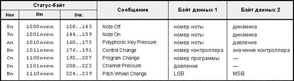
Основной "целевой группой" MIDI являются инструменты клавишного типа (синтезаторы), поэтому набор наиболее часто употребляемых сообщений вполне обоснован. Это, прежде всего, сообщения о нажатии и отпускании клавиши (Note On / Note Off), сообщения послекасания (Aftertouch Channel / Aftertouch Polyphonic), вращения звуковысотного колеса (Pitch Wheel Change) и смены программы (Program Change).
Статус-байт-посредник получил название Control Change ("изменение управления"). В спецификации все сообщения, вызываемые через этот байт, называются сообщениями типа Control Change, и предполагается, что они "генерируются манипулятором, отличным от клавиатуры". Но, например, колесо питч-бенда — тоже манипулятор, отличный от клавиатуры, однако он к группе Control Change не относится. Музыканты настолько часто им пользуются, что его просто невыгодно помещать во второй уровень. А вот колесо модуляции используется пореже, и там ему самое место. Хотя, повторю, это все в среднем: иногда вы можете руку не снимать с колеса модуляции, а к колесу высоты тона даже не прикоснуться.
Таким образом, "сообщения об изменении управления" — название условное, а функция статус-байта Control Change служебная. Он просто действует как префикс, открывающий путь к другим сообщениям.
Получается такая картина. Если пришел статус байт вида 1100nnnn, то инструмент сразу по нему определяет тип сообщения, — в данном случае это Program Change. Если пришел статус-байт 1011nnnn, то инструмент видит, что это байт-посредник, который о типе сообщения ничего не говорит, а просто уведомляет: сейчас пойдет сообщение второго уровня. Какое именно — смотри байт данных, следующий за посредником. Синтезатор читает этот байт и определяет, что это сообщение колеса модуляции. Положение колеса будет передано в третьем, завершающем байте (см. рис. 7). Таким образом, с помощью статус-байта-посредника и следующего за ним байта данных можно закодировать 128 сообщений.
Эти сообщения показаны в таблице на рис. 5. Их принято называть сообщениями контроллеров, но правильнее было бы называть сообщениями второго уровня. Слово контроллер не очень удачно еще и потому, что под контроллером часто подразумевается физический орган управления — колесо, движок или педаль. Поэтому догадаться о том, что имеется в виду — сообщение типа Control Change или физическое устройство, иногда бывает очень сложно, даже по контексту. Но традиция сложилась, поэтому под словом "контроллер" я буду иметь в виду сообщение второго уровня. А физическое устройство буду называть органом управления.
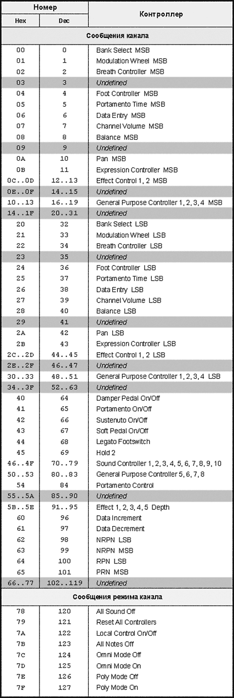
Сообщения контроллеров обозначаются в документации как СС#N (сообщение Control Change номер N, в десятичном представлении), например, сообщение колеса модуляции обозначается как CC#1.
Из таблицы видно, что часть сообщений контроллеров не определена (такие сообщения могут использоваться экспериментаторами и производителями для тестирования или отладки оборудования). Восемь последних сообщений (СС#120 — CC#127) являются сообщениями режима канала. Они применяются довольно редко, поэтому выделять им место в ограниченном первом уровне, то есть давать собственный статус-байт, не было смысла.
Можно заметить, что многие сообщения, выполняющие одну и ту же функцию, представлены двумя вариантами: MSB и LSB. Зачем такое разделение, почему не передавать пару MSB:LSB в одном сообщении? Во-первых, это увеличит длину всех сообщений второго уровня: за байтом-посредником придется передавать не два, а три байта. Многим контроллерам это не нужно — они позволяют производить только грубую настройку. Во-вторых, даже для контроллеров высокого разрешения часто можно обойтись грубой настройкой, и передавать LSB нет смысла.
Несмотря на то, что среди сообщений второго уровня есть более 50 свободных (которые пока не определены), разработчикам, видимо, понравилось прятать сообщения за посредниками, и они сделали третий уровень кодирования.
Идея такая: выделить специальное сообщение контроллера, в байте данных которого будет передаваться номер сообщения третьего уровня. Было решено задавать такой номер двумя байтами данных. На деле это означает, что для адресации должна использоваться пара MSB:LSB. Плюс ко всему, сообщения третьего уровня разбили на два типа: зарегистрированные параметры (RPN, Registered Parameter Numbers) и незарегистрированные параметры (NRPN, Non Registered Parameter Numbers). Первые кодируются с помощью пары CC#101:CC#100, вторые — СС#99:CC#98. Таким образом, третий уровень может содержать 16384 зарегистрированных параметров и 16384 незарегистрированных, то есть всего 32768 сообщений. Что ж, на первое время хватит...
Спецификация определяет назначение только для зарегистрированных параметров. В настоящий момент определены пять параметров, которые перечислены в таблице на рис. 6. Организации MMA и JMSC медленно, но верно пополняют этот список.
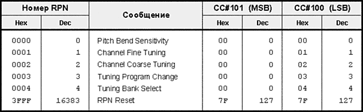
Незарегистрированные параметры предназначены для свободного использования. Каждый производитель может придумывать свои номера NRPN и использовать их так, как считает нужным. Фирмы Roland и Yamaha первыми приложили к ним руку, что отражено в стандартах GS и XG соответственно. Более подробно об NRPN, используемых в этих стандартах, поговорим в отдельной статье.
Проблема, которая может возникнуть при использовании NRPN, — несовместимость устройств. Так, одно устройство может применять NRPN номер 1 для настройки добротности эквалайзера, а другое — для изменения точки начала петли внутри семпла. Особенно неприятно это при соединении приборов в цепь (посредством разъемов Thru). Тогда потенциально несовместимые NRPN могут передаваться по всей цепи, что приведет к неверной их интерпретации. Многие устройства в этой связи позволяют отключить реакцию на NRPN.
Как получить доступ к сообщению третьего уровня? Для начала нужно задать его номер, используя пару MSB: LSB. Например, для сообщения RPN номер 1 эта пара будет иметь вид 0:1. Следовательно, нужно послать в CC#101 значение 0, а в CC#100 — 1. Таким образом, мы даем знать тон-генератору, какой параметр нас интересует. Для передачи значения параметра есть специально выделенный контроллер высокого разрешения под названием Data Entry (пара MSB:LSB, CC#6:CC#38). Предположим, нам нужно задать параметру RPN номер 1 значение 500. Пара MSB:LSB в этом случае будет иметь вид 3:116 (128 x 3 + 116 = 500). Посылаем в CC#6 значение 3, а в CC#38 — 116. Если какой-либо параметр не требует тонкой настройки, достаточно послать только MSB посредством контроллера CC#6.
Если нужно увеличить или уменьшить на единицу ранее переданное значение параметра, то для этого проще воспользоваться сообщениями Data Increment (СС#96) или Data Decrement (CC#97). Передавать заново пару MSB:LSB не нужно. Байт данных в сообщениях Data Increment/Decrement не используется и должен быть равен нулю. Пример использования контроллеров Data Entry и Data Increment/Decrement приведен далее, в разделе "RPN".
Доступ к параметрам NRPN происходит аналогично, только номер параметра задается парой CC#101:СС#100.
На рис. 7 показана схема передачи сообщений разного уровня, а на рис. 8 — требуемое количество байт.
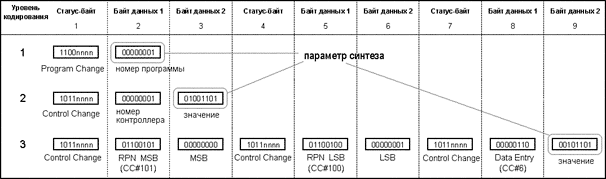
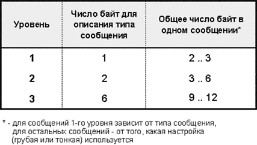
Классификация сообщений
Сообщения можно разделить на три основные группы: непрерывные, контроллеры-переключатели и простые команды.
Непрерывные контроллеры (Continuous Controllers) — это такие контроллеры, которые обычно посылаются целой серией и представляют собой поток плавно изменяющихся значений параметра. Например, при перемещении колеса модуляции из положения 100 в положение 200 генерируется множество сообщений Modulation Wheel, каждое сообщение будет передавать текущее положение колеса (в данном случае 100, 101, 102 и т. д.). Поскольку отличие двух соседних значений небольшое, будет складываться ощущение действительно непрерывного изменения глубины модуляции.
Непрерывные контроллеры можно дополнительно разделить на контроллеры высокого и контроллеры низкого разрешения. К первому типу спецификация относит сообщения из диапазона CC#0-CC#63 и CC#98-CC#101 (то есть пары MSB:LSB), ко второму — из диапазона CC#70-CC#95, а также сообщение режима канала Poly Mode Off (CC#126).
На самом деле, часть этих "непрерывных" контроллеров используется для статичной настройки. Например, сообщение Bank Select (выбор банка), в отличие от Modulation Wheel, нет смысла посылать целой серией с последовательно увеличивающимися номерами банков. Обычно банк выбирается один раз, ну иногда меняется по ходу дела. Подобные сообщения правильнее было бы назвать "статичными".
В первом уровне кодирования к сообщениям непрерывного типа относятся два вида послекасания (низкое разрешение) и Pitch Wheel Change (высокое разрешение). Сообщения Note Off, Note On и Program Change можно отнести к статичным, а сообщение Control Change само по себе ни в какую группу не попадает, так как является посредником.
Все зарегистрированные параметры третьего уровня также относятся к статичным.
Контроллеры-переключатели (СС#64-CC#69) могут передавать только два значения: включено или выключено (On/Off). Протокол связывает их с педалями всевозможных типов. Сюда же относится сообщение режима канала Local Control On/Off (CC#122).
Простые команды вообще не передают никакой информации, кроме самой команды. Например, сообщение режима канала All Notes Off (CC#123) просит тон-генератор выключить звучащие ноты. И только.
К простым командам относятся контроллеры CC#96, CC#97, CC#120, CC#121, CC#123, CC#124, CC#125, CC#127.
Рис. 9 подытоживает вышесказанное. Некоторые сообщения (вроде панорамы) однозначно отнести к непрерывным или статичным сложно. Например, панорама (Pan) может выставляться один раз в начале работы, а может меняться непрерывно, для создания эффекта перемещения по стереобазе.
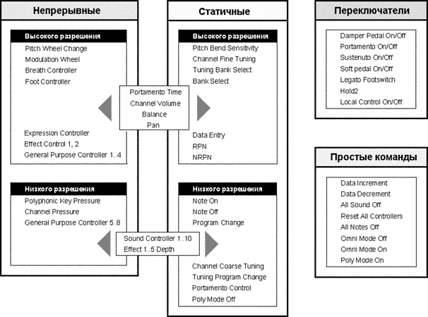
Генерирование сообщений
В названии многих сообщений отражен физический орган управления. Но это не значит, что, например, сообщение Pitch Wheel Change можно генерировать только с помощью звуковысотного колеса. Блоку синтеза внутри тон-генератора абсолютно все равно, какой орган управления используется. Важно то, какой смысл несет в себе сообщение и на какой параметр синтеза влияет. В данном случае изменяется высота тона.
Если вы управляете тон-генератором из секвенсора, то вопрос о генерировании сообщений вообще становится второстепенным. Главное — они записаны и передаются на выход секвенсора при нажатии кнопки Play. Для записи сообщения Pitch Wheel Change вы могли крутить реальное колесо, могли нарисовать график с помощью мыши, а могли вводить в память устройства "голые" цифры.
Современные синтезаторы позволяют управлять массой параметров, но количество органов управления на передней панели, как правило, ограничено. Так что, например, один и тот же слайдер может использоваться для управления разными функциями. Если в данный момент нужно управлять частотой среза фильтра, вы назначаете движок на передачу соответствующего сообщения. В другой ситуации вы можете использовать тот же движок для управления громкостью или панорамой. Одним словом, синтезаторы позволят назначать органы управления на передачу любых сообщений. Если вам удобнее менять глубину модуляции с помощью фейдера, — пожалуйста, назначьте на фейдер сообщение CC#1 (Modulation Wheel).
Естественно, сообщения должны быть совместимы по типу. Так, если педаль представляет собой контроллер-переключатель, то есть имеет только два состояния "нажата/отпущена", то чаще всего нет смысла назначать ее для управления непрерывным сообщением вроде модуляции.
Кроме того, существует возможность переназначения контроллеров. Например, секвенсор можно настроить так, чтобы при приеме сообщений Modulation Wheel они преобразовывались в сообщения Pan. Тогда при вращении колеса модуляции будут записаны сообщения об изменении панорамы. Подобным образом можно настроить и многие тон-генераторы. Например, сообщения послекасания, поступающие на MIDI-вход устройства, могут преобразовываться в сообщения модуляции. Переназначение можно выполнять и на стороне передатчика, когда генерируется сообщение одного типа, но прежде чем попасть на MIDI-выход, оно преобразуется в сообщение другого типа. Одним словом, переназначение дает дополнительную гибкость в управлении MIDI-системой.
Обработка сообщений
Сообщение может поступить напрямую с органа управления, из секвенсора, образоваться как результат переназначения — это не так существенно. После того, как оно поступило в звукообразующую часть тон-генератора, оно должно использоваться по прямому назначению. Так, например, сообщение контроллера CC#10 должно приводить к изменению панорамы, а не высоты тона. В случаях, когда действие контроллера четко не определено, производителю дается свобода выбора. Например, сообщение Foot Pedal может управлять темпом ритм-машинки. Для реализации функций, которых нет среди стандартных сообщений, могут использоваться сообщения типа General Purpose, NRPN или SysEx.
Естественно, не каждое устройство реагирует на все определенные в протоколе сообщения. Обычно в руководстве к устройству содержится так называемая карта MIDI-реализации (MIDI Implementation Chart), которая наглядно показывает, на какие сообщения устройство реагирует, какие может генерировать и т. д. Более подробно о картах реализации поговорим в статье, посвященной устройствам.
Большинство контроллеров действуют на уже звучащие и последующие ноты, то есть эффект от их использования слышен немедленно. Сообщения контроллеров для одного MIDI-канала не затрагивают другой, поэтому в мультитембральном устройстве каждая программа, звучащая на своем канале, может иметь собственные настройки контроллеров.
Кроме того, инструмент запоминает однажды выставленное значение контроллера и использует его до тех пор, пока оно явно не будет изменено или не произойдет принудительный сброс посредством специальных команд. Так, если сдвинуть колесо модуляции из нулевого положения, то модуляция будет применяться к звукам до тех пор, пока не повернуть колесо обратно. Со звуковысотным колесом проще — при отпускании оно обычно возвращается в исходное состояние автоматически.
Тот факт, что устройство "помнит" ранее выставленный контроллер, позволяет избежать многократной передачи пары MSB:LSB. Если происходит постоянная тонкая подстройка в узком диапазоне, то можно один раз передать MSB, а затем — серию из нескольких LSB. Это и удобнее, и время передачи уменьшается.
Многие устройства не реагируют на тонкую подстройку для большинства контроллеров. Это вполне нормально, если производитель считает, что повышенная точность в данном сообщении не нужна. Например, в контроллерах громкости и экспрессии обычно хватает 128 уровней.
Состояние контроллеров-переключателей передается в одном байте, а, следовательно, допускает 128 значений. Возникает вопрос — что считать за On, а что за Off? Спецификация требует, чтобы значения от 0 до 63 рассматривались как Off (выключено), а значения от 64 до 127 — как On (включено). Для совместимости со старыми инструментами рекомендуется всегда посылать Off как 0, а On как 127.
Контроллеры, относящиеся к простым командам, не передают дополнительной информации, и третий байт в сообщении должен быть всегда равен нулю. Приемное устройство должно игнорировать этот байт, даже если по какой-то причине он содержит значение, отличное от нуля.
Сообщения режима канала
При разработке протокола MIDI упор делался на монотембральные устройства. Такие устройства в каждый момент времени воспроизводят только одну партию, а, следовательно, принимают и передают данные только по одному MIDI-каналу. Для получения рабочего ансамбля, например, баса, рояля и скрипки, нужно иметь три монотембральных синтезатора, первый из которых будет производить партию баса, второй — рояля, а третий, соответственно, скрипки.
Большинство современных инструментов — мультитембральные. Напомню, что мультитембральность измеряется в "частях". Вообще-то с английского языка слово "part" можно перевести и как "партия" (музыкальная), но в русском языке сочетание "однопартийный синтезатор" будет вызывать ненужные ассоциации. Когда про синтезатор говорят, что он имеет мультитембральность 16 частей, то это значит, что он может принимать данные по 16 MIDI-каналам, и на каждом канале партия может звучать своим тембром.
Однако начнем разговор о режимах применительно к монотембральным устройствам, как того и требует спецификация.
В монотембральном тон-генераторе существует так называемый основной канал (Basic Channel). Это тот канал, по которому ведется прием или передача сообщений. Так, если основной канал имеет номер 3, то сообщения для пятого канала, поступающие на вход устройства, будут проигнорированы. Обычно основной канал можно выбирать произвольно, но в некоторых устройствах он может быть жестко определен — "зашит". Такое устройство довольно сложно интегрировать в MIDI-систему. Например, если на первом инструменте зашитый основной канал имеет номер 1, а на втором — 2, то устройства просто бесполезно соединять MIDI-кабелем. Первое будет всегда передавать по каналу 1, а второе — ожидать сообщений по каналу 2. Разговор слепого с глухим...
Если все же соединить инструменты необходимо, можно включить между ними так называемый MIDI-процессор. Он представляет собой небольшую коробочку, которая занимается преобразованием MIDI-сообщений в соответствии с заданным алгоритмом. Можно настроить процессор таким образом, чтобы все сообщения первого канала преобразовывались в сообщения второго.
Если основной канал можно задавать произвольно, то обычно это делается с передней панели инструмента. Некоторые устройства позволяют выбирать основной канал посредством сообщений SysEx.
Спецификация определяет восемь сообщений режима канала (CC#120-CС#127). Однако непосредственно MIDI-режимами управляют только четыре последних. Остальные заведуют функциями сброса и локальным управлением. С него и начнем.
Local Control
Если вы записываете партии в секвенсор, используя для этого MIDI-клавиатуру и звуковой модуль, то, очевидно, соединяете устройства так, как показано на рис. 10. Для того, чтобы записать исполнение, вы соединяете MIDI-выход клавиатуры с MIDI-входом секвенсора. Для того, чтобы записанную партию можно было прослушивать, вы соединяете MIDI-выход секвенсора с MIDI-входом звукового модуля. А чтобы слышать то, что играете, в секвенсоре нужно включить режим Thru. В этом режиме все сообщения, поступающие на вход секвенсора, транслируются на его выход. В конце концов, они попадают в звуковой модуль, и при нажатии клавиши вы слышите звук. Здесь все аналогично мониторингу при записи аудиосигнала, когда звукоинженер слушает то, что прошло через звукозаписывающий тракт.
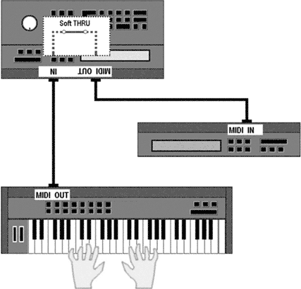
Теперь представьте, что вместо звукового модуля и MIDI-клавиатуры вы используете синтезатор (рис. 11а). В этом случае возникает проблема. Когда вы нажимаете клавишу, синтезатор, естественно, издает звук, но в то же время передает сообщение о нажатии клавиши в секвенсор. Секвенсор его получает и транслирует на свой выход, после чего сообщение попадает обратно на вход синтезатора, в результате чего сыгранная вами нота дублируется. То есть, при нажатии одной клавиши синтезатор задействует два голоса полифонии: один — как реакцию на сигнал от собственной клавиатуры, другой — как реакцию на сообщение Note On, полученное с MIDI-входа. Короче, говоря языком концертного звукоинженера, получается "завязка".
Если при этом нет слышимой задержки между звуками, проблему можно рассматривать как терпимую. Но иногда небольшая задержка есть, и вы слышите эффект наподобие фленджера. На записанные данные это не влияет, но полифония инструмента уменьшается. А полифония — ресурс всегда ограниченный, поэтому дублирования нот желательно избегать.
Ситуацию, казалось бы, просто исправить, отключив режим Thru в секвенсоре. Однако это не выход, поскольку при записи вы все-таки должны слышать то, что приходит из секвенсора, а не реакцию инструмента на нажатие клавиш. Решение состоит в том, чтобы отключить звукообразующую часть синтезатора от его же клавиатуры (рис. 11b). В этом случае клавиатура продолжает посылать сообщения на выход, а звукообразующая часть продолжает реагировать на вход. Но при нажатии клавиши вы слышите только одну ноту — ту, которая поступила из секвенсора.
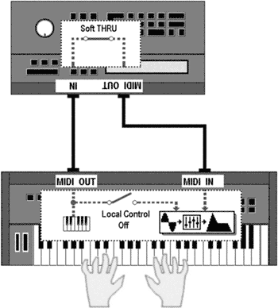
Подобное действие носит название Local Control Off (отключить локальное управление). Обычно это можно сделать, нажав кнопку на передней панели инструмента.
Включать и выключать локальное управление можно также посредством сообщения режима канала Local Control On/Off (СС#122). Предположим, что основной канал в нашем тон-генераторе имеет номер 5, и что мы хотим выключить локальное управление. Тогда последовательность байт, из которой должно состоять сообщение Local Control Off, выглядит так, как показано на рис. 12.
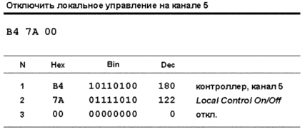
На рисунке показаны байты в шестнадцатеричном, десятичном и двоичном виде, а также даны комментарии по каждому байту. Подобным образом будут оформляться все примеры использования сообщений в статьях цикла.
Команды сброса
Наличие в MIDI двух разных сообщений для взятия и снятия ноты часто приводит к так называемым зависшим нотам, о чем уже упоминалось в предыдущей статье. Если в тон-генератор пришло сообщение "взять ноту", а сообщение "снять ноту" не пришло, нота будет звучать неопределенно долго. Такое может случиться, например, во время живого выступления, если кто-то наступил на MIDI-кабель, соединяющий MIDI-клавиатуру и тон-генератор, и кабель отсоединился. Иногда ноты зависают из-за глюков в секвенсоре или в операционной системе тон-генератора. В любом случае нужно, чтобы звук прекратился как можно скорее. Для этого используется одно из двух сообщений: All Notes Off или All Sound Off.
Сообщение All Notes Off (CC#123) дает команду тон-генератору выключить все звучащие на канале ноты. Тон-генератор должен реагировать так, как будто для каждой звучащей ноты пришло сообщение Note Off. Таким образом, команда All Notes Off включает у каждой ноты участок затухания (Release) огибающей. Эта команда должна влиять только на те ноты, сообщение о взятии которых пришло через MIDI-вход устройства и не должна влиять на ноты, которые были взяты на локальной клавиатуре.
Спецификация не требует, чтобы устройство реагировало на команду All Notes Off, поскольку аналогичное действие можно выполнить, послав для каждой звучащей ноты сообщение Note Off в индивидуальном порядке, хотя это и более хлопотно. На некоторых устройствах есть так называемая "кнопка паники" (Panic Button). Она, как правило, посылает сообщение All Notes Off по всем MIDI-каналам, но может посылать также сообщения Note Off для всех номеров нот, и другие команды сброса.
Пример последовательности байт для выключения нот на первом MIDI-канале показан на рис. 13.
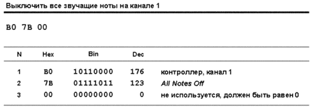
Сообщение All Sound Off (CC#120) добавлено в MIDI-спецификацию в 1991 году. Оно предназначено для немедленного отключения всех звуков на канале: нот, "хвостов" реверберации и прочих эффектов, если они используются. Таким образом, нотам не предоставляется возможность естественного затухания путем перехода в стадию Release огибающей. Как говорится в спецификации, "их огибающая должна быть установлена в ноль так быстро, насколько это возможно". Сообщение All Sound Off генерируется многими секвенсорами в тот момент, когда пользователь нажимает кнопку Stop.
Сообщение должно влиять только на ноты, полученные через MIDI-вход устройства, и не должно влиять на ноты, извлеченные с локальной клавиатуры.
Сообщение Reset All Controllers (CC#121) появилось в 1988 году. Оно дает команду сбросить все контроллеры на канале в начальное состояние (состояние по умолчанию, пресетное), за исключением тех, которые управляют текущим режимом канала.
Пресетные значения каждого контроллера спецификация жестко не определяет (тут производители имеют свободу выбора), но рекомендации дает следующие. Контроллеры-переключатели (типа Hold Pedal) переводятся в состояние Off (педали отпущены). Модуляция устанавливается в 0. Экспрессия — в максимум, громкость (MIDI Volume) — в 100, панорама — в центр, звуковысотное колесо — в среднее положение. Параметры RPN также сбрасываются, в частности, диапазон изменения высоты тона (Pitch Bend Sensitivity) устанавливается в +/-2 полутона. Если тон-генератор реагирует на послекасание, то оно сбрасывается в 0 для нот, звучащих в момент прихода команды.
Спецификация не требует, чтобы инструмент реагировал на команду Reset All Controllers. В этом случае устройство управления (обычно секвенсор) должно сбросить каждый контроллер по отдельности. При этом пресетные значения, естественно, будут выбраны производителем секвенсора. Для тех устройств, которые реагируют на сброс контроллеров, в документации обычно указано, какие пресетные значения используются.
Режимы MIDI
Многие музыканты, использующие протокол MIDI, считают его режимы кошмаром или, по крайней мере, бесполезным усложнением. Многие технические специалисты считают эти режимы нерациональными, а многие производители устройств реализуют какой-либо один режим, игнорируя остальные. Трудно сказать, почему так сложилось: может быть, из-за не очень ясных намерений разработчиков и недостаточно доходчивого изложения режимов в самой спецификации, или потому, что большинству музыкантов они просто не нужны. Во всяком случае, "негатив" укрепился, особенно после того, как возросло число мультитембральных устройств.
Однако при всем при этом некоторые MIDI-режимы могут использоваться для интересных творческих решений, поэтому полезно иметь о них хотя бы общее представление.
Так что же такое MIDI-режим? Если кратко, то это схема распределения голосов тон-генератора между MIDI-каналами и нотами. Под голосом имеется в виду простейшая единица синтеза, минимальная часть ресурсов звукообразующей части, которая требуется для воспроизведения одной ноты. Производители называют эту единицу по-разному: тон, голос, элемент, модуль и т. п. В аналоговом синтезаторе это может быть отдельный электронный блок, в цифровом — тайм-слот DSP.
Напомню, что тон-генераторы могут быть монофоническими, то есть способными в каждый момент производить только одну ноту, и полифоническими, то есть способными производить одновременно две ноты и более. Полифония современных инструментов находится в широких пределах, от 2 до 128 и даже более голосов. Теоретически, такое количество нот устройство может производить одновременно. Однако зачастую в пэтчах со сложной структурой для генерирования одной ноты используются два, три и даже больше голосов. В таких случаях реальная полифония гораздо меньше.
Начнем рассмотрение режимов применительно к монотембральному устройству.
Сообщения контроллеров из диапазона CC#124-CC#127 задают определенные правила работы устройства при приеме и передаче сообщений. Устройство должно реагировать на эти команды только в том случае, если они приходят по основному каналу. При получении любой из команд все звучащие ноты, поступившие ранее на MIDI-вход устройства, должны быть выключены. Фактически, при этом выполняется неявный вызов команды All Notes Off.
Слово Omni происходит от латинского "Omnis", означающего "все". Команда Omni Mode On (СС#125) заставляет тон-генератор принимать голосовые сообщения по всем MIDI-каналам, независимо от того, на какой основной канал он настроен. Команда Omni Mode Off (CC#124) возвращает к приему по основному каналу. Команда Poly Mode Off (СС#126) означает, что тон-генератор должен воспроизводить поступающие ноты монофонически. То есть, в каждый момент времени должна воспроизводиться только одна нота — последующая нота снимает предыдущую. В этой команде передается дополнительный параметр, который имеет смысл только в режиме 4 (см. далее). Команда Poly Mode On (CC#127) означает, что тон-генератор должен воспроизводить поступающие ноты полифонически — количество одновременно звучащих нот ограничивается только доступной полифонией.
MIDI-режимы образованы сочетанием этих команд (рис. 14а). Всего есть четыре режима, а наиболее распространенные из них имеют собственное имя (рис. 14b).
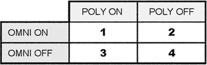
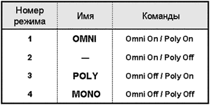
Текущий режим может быть выбран с помощью органов управления на передней панели устройства, либо посредством комбинации команд, приведенных ранее. Так, например, устройство переходит в режим 1 после получения комбинации команд Omni On / Poly On.
MIDI-режимы могут быть как у принимающего, так и у передающего устройства. Скоммутированные друг с другом приемник и передатчик, как правило, должны находиться в одном и том же режиме, в противном случае возможна непредсказуемая реакция на голосовые сообщения.
Многие устройства поддерживают не все режимы. При получении команд, требующих перейти в режим, который не поддерживается, устройство может либо проигнорировать их, либо перейти в режим, наиболее близкий по смыслу.
Режим 1 (Omni)
В этом режиме устройство реагирует на каждое поступившее голосовое сообщение, независимо от того, по какому каналу оно пришло. По сути, это отказ от системы MIDI-каналов как таковой — младшая половина статус-байта, содержащая номер канала, в режиме Omni просто игнорируется. При этом инструмент отвечает на сообщения полифонически (рис. 15).
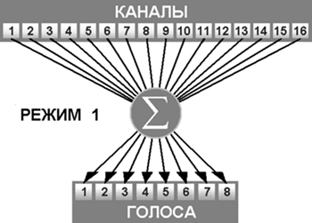
Если в этом режиме находится передающее устройство, то оно должно посылать все голосовые сообщения по основному каналу, при этом количество одновременно посылаемых нот (полифония) не ограничивается. Для монотембрального устройства такое поведение естественно.
А теперь представьте, что текущий выбранный пэтч — рояль, а секвенсор посылает тон-генератору, находящемуся в режиме Omni, полноценную аранжировку, где каждый инструмент играет на своем канале. Мы услышим, как звуками рояля будут воспроизводиться все партии аранжировки.
Кому это нужно? Хороший вопрос. Разработчики подразумевали, что в этом режиме могут работать устройства, которым разделение по каналам не требуется. Например, когда есть несколько устройств, соединенных в цепь, и при нажатии клавиши на первом все остальные хором повторяют ту же ноту. Не правда ли, попахивает концом 70-х, когда такое наложение звуков за счет одновременной игры на двух инструментах было актуально? Кстати, первые MIDI-инструменты (Roland Jupiter 6, Sequential Circuits Prophet 600) не различали MIDI-каналов и реагировали на все, что придет. Возможно, просто потому, что разработчики торопились к зимней выставке NAMM 1983 года, когда нужно было показать MIDI-технологию в действии. Интересно, что следующие версии этих инструментов могли уже настраиваться на прием по одному из каналов.
Некоторые называют режим Omni режимом продавца (sales manager). Представьте ситуацию, когда покупатель в магазине музыкального оборудования "щупает" два MIDI-устройства и просит продавца включить и соединить их с друг с другом. Разработчики, похоже, волновались за тот случай, когда при включении питания передающее и приемное устройство будут настроены на разные основные каналы, и передача данных между ними станет невозможна. А это потенциальных покупателей может огорчить... Кстати, спецификация требует, чтобы при включении питания устройства находились именно в режиме Omni. Похоже, неспроста.
Однако большинство устройств это требование нарушают, и при включении питания переходят в тот режим, в которым они находились до выключения.
На рис. 16 показан пример последовательности байт, переводящей инструмент в режим Omni. Основной канал до перехода в этот режим был третий, поэтому пара сообщений Omni On и Poly On должна передаваться по третьему каналу.
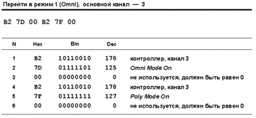
Теперь вопрос — если прибор в режиме Omni начинает прием по всем каналам, какой канал будет являться основным? Ответ — тот же самый, что был до перехода в режим Omni. Переключить устройство в другой режим можно, только послав сообщения режима по основному каналу, либо с передней панели.
Режим 2
Этот режим настолько бесполезен, что даже не имеет собственного имени. Устройство переходит в него после получения комбинации сообщений Omni On / Poly Off. MIDI-спецификация описывает режим 2 так: "Голосовые сообщения принимаются по всем каналам, но в каждый момент времени звучит только одна нота". Вы можете представить, зачем это нужно? Я тоже с трудом. Единственный вариант, который приходит на ум, — это соединение в цепь нескольких монофонических синтезаторов. При этом не нужно заморачиваться с настройкой основного канала на каждом — они будут реагировать на сообщение по любому каналу. Рис. 17 отражает работу приемного устройства.
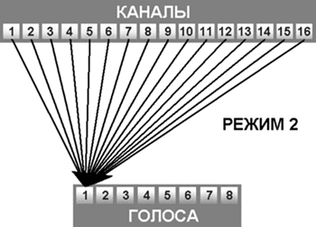
Если в режиме 2 находится передающее устройство, то оно должно посылать все голосовые сообщения по основному каналу, при этом ноты могут посылаться по одной в каждый момент времени, то есть монофонически, а могут и одновременно (полифонически).
Режим 3 (Poly)
Этот режим является самым приемлемым для полифонического монотембрального устройства. Прием ведется только по одному каналу — тому, который является основным. Поступающие сообщения распределяются между доступными голосами, то есть инструмент отвечает на сообщения полифонически (рис. 18). Передающее устройство работает здесь так же, как и в режиме Omni.
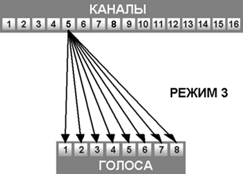
В режиме Poly, и только в нем, система MIDI-каналов используется по своему прямому назначению. Устройства можно соединять в цепь, при этом каждое будет реагировать только на сообщение для одного канала и игнорировать другие. Несколько монотембральных тон-генераторов в этом режиме могут исполнять мультитембральную аранжировку, передаваемую секвенсором.
Режим 4 (Mono)
Устройство переходит в этот режим после получения комбинации сообщений Omni Off / Poly Off. Поведение устройства здесь зависит от параметра, переданного в сообщении Poly Off. Если параметр в сообщении имеет значение от 1 до 16, то он задает число каналов, на которые будет реагировать инструмент, начиная с основного канала. Если параметр равен 1, то это, по сути, означает монотембральный монофонический инструмент. Так, если основной канал у нас третий, то прием будет вестись только по нему; следовательно, доступен только один тембр, с одним голосом. Рисунок 19 иллюстрирует это.
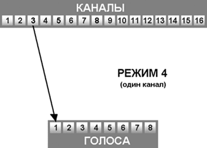
Однако самое интересное начинается, когда параметр сообщения Poly Off больше 1. Если, например, он равен 6, а основной канал — третий, то инструмент будет принимать сообщения на каналах 3, 4, 5, 6, 7 и 8 мультитембрально и монофонически (рис. 20).
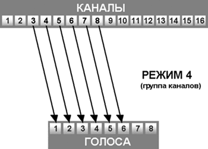
Теперь, если назначить на каждый из этих каналов один и тот же тембр, то мы получим систему, идеально подходящую для имитации гитары и других струнных инструментов. Каждая струна гитары будет звучать на своем MIDI-канале! Это позволит обойти две проблемы. Во-первых, гитара позволяет делать подтяжку на одной струне, не смещая высоты тона на других струнах. Если поместить всю партию гитары на один MIDI-канал, то мы не сможем делать подтяжку выборочно, на каких-либо нотах, — сообщение звуковысотного колеса, как и все сообщения контроллеров, действует сразу на все ноты канала. Это касается и других приемов игры, таких как глиссандо и легато.
Во-вторых, гитара имеет возможность играть две одинаковых ноты в один и тот же момент на разных струнах. При назначении каждой струне собственного канала можно в любой момент времени получить унисон независимо от того, насколько гибко тон-генератор обращается с двойными нотами на одном канале.
В-третьих, струны гитары ведут себя монофонически, то есть при защипывании струны новый звук немедленно гасит старый. Режим 4 позволяет об этом не беспокоиться — выключение нот произойдет автоматически, так как для каждого канала разрешен одновременно только один голос. Ну и, наконец, для каждой струны можно задать свой тембр — получится гитара, не имеющая аналогов в реальной жизни.
На рис. 21 показана последовательность байт, которую нужно послать в тон-генератор, чтобы настроить его для имитации шестиструнной гитары. При этом основной канал — третий.
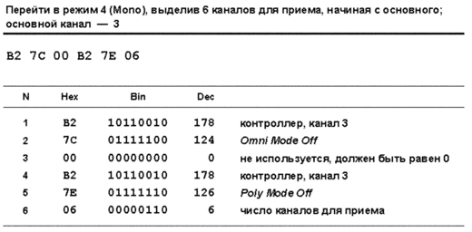
Если параметр сообщения Poly Off равен нулю, то здесь все происходит аналогично предыдущему, с той лишь разницей, что общее число каналов будет равно числу доступных голосов полифонии.
Типичным передатчиком, работающим в режиме 4, является MIDI-гитара. Она должна передавать голосовые сообщения каждой струны по отдельному MIDI-каналу, начиная от основного, в каждый момент времени по одной ноте на канал.
MIDI-режимы и мультитембральность
Складывается впечатление, что авторы MIDI делили тон-генераторы на два типа: "полифонические монотембральные" и "монофонические мультитембральные". А самое желанное в современном мире сочетание "полифонический мультитембральный" как-то обошли стороной.
Правда, на страницах спецификации кое-где проскальзывают загадочные фразы о том, что "один физический инструмент может функционировать как несколько виртуальных" или "некоторые инструменты могут работать в мультирежиме (Multi Mode)". Но, кроме упоминания, ничего о мультирежиме не говорится. При этом совершенно ясно, что имеется в виду.
Физический инструмент, состоящий из нескольких виртуальных — это мультитембральный тон-генератор. А мультирежим — вынужденное изобретение производителей как ответ на отсутствие такового в спецификации. Каждая часть (программа, тембр) в современном тон-генераторе является, по сути, отдельным монотембральным инструментом, к которому применимо все сказанное выше. То есть, часть может быть настроена на прием и передачу по одному из MIDI-каналов (иметь основной канал), а также работать в одном из MIDI-режимов независимо от других частей.
Как правило, большинство производителей по умолчанию используют в частях режим 3 — в этом случае каждая часть может быть назначена на свой MIDI-канал и играть своим тембром, отвечая на поступающие сообщения полифонически (рис. 22). В итоге все устройство как одно целое работает в так называемом мультирежиме — режиме полифонического мультитембрального инструмента.

На этом обсуждение режимов закончим и перейдем к голосовым сообщениям.
Программы и банки
Сообщение о смене программы (Program Change) назначает программу (пэтч) определенному MIDI-каналу в тон-генераторе. Это сообщение может поступить в любой момент, в процессе исполнения или воспроизведения, и, таким образом, позволяет динамически менять одну звучащую программу на другую. Вообще говоря, разные типы MIDI-устройств могут реагировать на это сообщение по-разному. Ритм-машинка может посредством Program Change менять текущий паттерн, процессоры эффектов — переключать алгоритмы или пресеты.
В мультитембральном синтезаторе реакция на сообщение Program Change может отличаться, в зависимости от того, в каком режиме находится инструмент, и на каком канале сообщение пришло. В режиме перфоманса обычно меняется не программа, а целая комбинация (перфоманс).
Многие тон-генераторы при получении Program Change не выключают ноты, которые в этот момент звучат на канале. Например, если во время звучания подклада приходит сообщение о смене программы на трубу, то ноты подклада продолжают звучать (тембром подклада), а новые ноты будут звучать тембром трубы. Но полагаться на такую возможность не стоит — есть тон-генераторы, которые выключают звучащие ноты немедленно.
Сообщение Program Change имеет один байт данных, в котором содержится номер программы. Следовательно, можно выбрать одну из 128 программ. Например, как выглядит назначение программы номер 36 на четвертый MIDI-канал, показано на рис. 23.
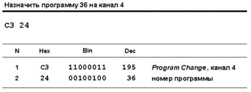
Один из главных подводных камней, на который можно натолкнуться с этим сообщением, — нумерация программ в конкретном устройстве. В компьютерном мире все начинается с нуля, поэтому номера программ приходят в диапазоне от 0 до 127. И действительно, внутри устройства программы нумеруются с нуля. Но многие производители считают, что музыканты не в состоянии нормально воспринимать программу номер 0 (как, впрочем, и MIDI-канал номер 0), и поэтому нумеруют программы для пользователя, начиная с 1. Такие "адаптированные" номера могут указываться на передней панели или в руководстве к инструменту. Другие фирмы нуля не боятся, и первая программа у них, как и положено, имеет номер 0. Отсюда — гарантированная путаница при работе с разными инструментами. Хорошо, когда программы называются по имени, а если по номеру? В вышеприведенном примере программа номер 36 на "адаптированных" инструментах будет показана пользователю как 37.
Второй подводный камень — совместимость инструментов. На одном синтезаторе программе номер 5 может соответствовать гитара, на другом — флейта, на третьем — вообще набор ударных. Так что композиция, подготовленная на одном инструменте, на другом может звучать, мягко говоря, некорректно, что неприемлемо для обмена и распространения. С появлением в 1991 году спецификации General MIDI эта проблема была отчасти решена — каждому номеру программы сопоставили свой характерный тембр. Подробнее о проблемах совместимости поговорим в одной из следующих статей.
Некоторые старые инструменты имеют меньше 128 программ. Что произойдет, если в инструменте, скажем, только 64 программы, а в сообщении Program Change пришел номер 110? Скорее всего, сообщение будет проигнорировано. В некоторых случаях такой номер может быть преобразован в один из доступных.
Большинство же современных тон-генераторов содержат более 128 программ (в некоторых устройствах число программ превышает 1000). Понятно, что выбрать программу, скажем, 512 с помощью одного сообщения Program Change нельзя. Поэтому сложилась практика организовывать программы в банки. Один банк может содержать, например, 128 программ, и тогда программа с номером 512 будет первой программой в пятом банке (128 x 4 = 512).
Как ее выбрать? Очень просто — с передней панели инструмента. Сначала кнопкой выбирается нужный банк, а затем уже программа. А если то же самое нужно сделать посредством MIDI-сообщения? До 1990 года такого сообщения не было. Какие только способы не выдумывали производители! Все они больше напоминали ритуальные пляски.
Например, использовались карты переадресации. Синтезатор настраивался так, чтобы, скажем, при получении сообщения Program Change с номером 12 выбиралась внутренняя программа номер 344. Эта процедура выполнялась для всех тембров, используемых в композиции. Другой способ — скопировать нужные программы в пользовательский банк, выбрать его вручную с панели инструмента, после чего сообщение Program Change позволит использовать программы из этого банка. Некоторые производители применяли для переключения банков дополнительное MIDI-сообщение, какое именно — зависело от конкретного инструмента. Часто использовались сообщения SysEx.
Наконец в 1990 году организация MMA решила навести порядок и стандартизировать процесс выбора банка. Появилось сообщение высокого разрешения под названием Bank Select. Его поместили во второй уровень кодирования (первый был уже весь занят), к контроллерам, и разбили на два контроллера. Старшие 7 бит задаются контроллером СС#0, младшие — контроллером СС#32.
С помощью Bank Select можно получить доступ к одному из 16384 банков, а конкретную программу в этом банке выбрать как обычно — с помощью сообщения Program Change. Таким образом, если в каждом банке будет по 128 программ, то "сладкая парочка" Bank Select / Program Change позволит адресовать одну из 2 097 152 программ (16384 x 128). Но не стоит впадать в эйфорию от этого числа. Во-первых, ни один производитель пока не выпустил инструмента с таким количеством звуков (да и зачем?) Во-вторых, есть замечательные инструменты, выпущенные до августа 1990 года, которые на сообщение Bank Select не реагируют. И выбор нужной программы для них по MIDI возможен только с помощью одного из вышеупомянутых "древних" способов.
Наконец, и это самое неприятное, спецификация MIDI не определяет точного механизма выбора звуков с помощью Bank Select. А именно: не определено количество доступных банков, число программ в каждом банке и принцип нумерации программ. Так что каждый производитель применяет собственные схемы, часто на основе сложившейся традиции.
Например, в некоторых инструментах банк содержит от 8 до 10 программ, в других — 16, 32, 64 или 128. Банки могут нумероваться буквами (A, B, C) или цифрами, арабскими или римскими. Нумерация программ в каждом банке может начинаться с 0 или с 1. В одном из старых вариантов номер программы состоял из двух цифр. Первая определяла банк, вторая — номер программы в банке. При этом в каждом банке было по восемь программ. Таким образом, первая программа первого банка имела номер 11, потом нумерация шла до 18, затем перепрыгивала на 21 (первая программа второго банка) и т. д. Буквенно-цифровая нумерация может выглядеть как B054, что означает программу номер 54 из банка B.
Некоторые производители предложили собственные стандарты, определяющие минимальные характеристики совместимых устройств. Частью этих стандартов является и схема организации программ в банках. Наиболее известные — GS (Roland) и XG (Yamaha), но о них поговорим подробнее в статье, посвященной совместимости.
При получении сообщения Bank Select тон-генератор не должен выполнять каких-либо действий. Полученный номер банка должен сохраняться на будущее. А затем, как только поступит сообщение Program Change, устройство выберет программу из банка с сохраненным номером. Некоторые устройства все же реагируют на Bank Select дополнительными действиями. Так, в семплерах это сообщение может служить командой для загрузки набора семплов с диска в оперативную память. В некоторых инструментах посредством сообщений Bank Select переключаются наборы ударных, что, вообще говоря, — нарушение спецификации.
Если нужно переключиться на другую программу внутри текущего банка на том же MIDI-канале, то достаточно одного сообщения Program Change, посылать Bank Select не надо. Если нужно выбрать программу из другого банка, то сначала посылается Bank Select, затем Program Change.
Большинство устройств содержат менее 128 банков. Некоторые из них в этой связи реагируют в сообщении Bank Select только на контроллер СС#0, используя его не как MSB, а напрямую как номер банка. Другие требуют адресацию с использованием обоих контроллеров (CC#0 и CC#32). Спецификация требует, чтобы независимо от числа доступных банков использовалась полная схема адресации.
Вернемся к нашему примеру с программой 512. Пусть инструмент хранит в каждом банке по 128 программ. Тогда программа 512 будет, как говорилось ранее, первой программой в пятом банке. Предположим, что мы работаем на восьмом MIDI-канале, где текущий банк — третий. Следовательно, для выбора программы 512 на шестнадцатый MIDI-канал нужно посылать оба сообщения: Bank Select и Program Change (рис. 24).
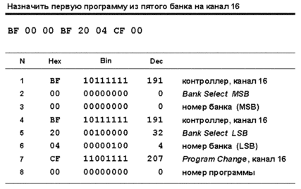
Выбор программ возможен также посредством сообщений SysEx, но этот метод не является стандартным и зависит от конкретной модели тон-генератора.
Нужно учесть, что обработка устройством команд смены банка и программы может занять значительное время (десятки миллисекунд и более). Некоторые тон-генераторы в момент переключения программы производят посторонний шум.
Извлечение звуков
MIDI является выраженным клавишно-ориентированным протоколом, поэтому процесс извлечения звуков кодируется двумя простыми сообщениями — взять ноту (Note On) и снять ноту (Note Off). Исполнитель при нажатии клавиши задает сразу три параметра: момент начала звучания, динамику и высоту тона. Длительность звука определяется по моменту отпускания клавиши.
Такая модель хорошо подходит и для ударных инструментов. Здесь, правда, основным выразительным средством является динамика, так как высотой тона ударных в процессе исполнения чаще всего управлять нельзя, как и длительностью звука.
К инструментам с другим принципом звукоизвлечения (струнным, духовым) такая модель не подходит. Например, на скрипке музыкант может управлять тремя указанными параметрами по отдельности: левой рукой он задает высоту звука (путем прижатия струны в нужной позиции), правой — момент начала и окончания звучания, а также динамику (ведением смычка по струне). Эти параметры музыкант может изменять независимо друг от друга, причем в процессе звучания. Например, момент появления звука никак не укладывается в схему "нажать клавишу с нужной громкостью". Здесь это очень тонкий процесс: звук может постепенно возникать из тишины, набирая громкость, и так же уходить в тишину, то есть музыкант способен изменять динамику в процессе звукоизвлечения.
MIDI все упрощает и требует однозначного решения — в какой момент и с какой динамикой должна звучать нота. После получения сообщения Note On динамика передается в генератор огибающей синтезатора, и ее изменение в процессе звучания происходит не по воле музыканта, а автоматически на основе параметров огибающей. Конечно, в MIDI есть способы имитации "неклавишной" техники звукоизвлечения, но это требует дополнительных усилий и хорошего знания возможностей конкретного тон-генератора.
В MIDI используется равномерно-темперированный строй и 128 нот различной высоты (с номерами от 0 до 127). Частота нот задается с помощью номера. Нота с номером 60 — всегда До первой октавы (частота 261 Гц), рис. 25.

Полный частотный диапазон, покрываемый таким образом, превышает 10 октав (от 8 Гц до 12543 Гц), что более чем достаточно. Для перевода номера ноты в частоту можно использовать формулу на рис. 26.
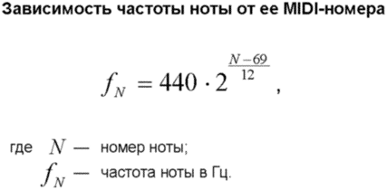
С номерами нот работать неудобно, но и музыкальный способ наименования (вроде d3 — Ре третьей октавы или Cis1 — До диез контроктавы) не подходит; еще и потому, что в разных странах применяются разные обозначения. Спецификация MIDI по этому поводу молчит, а большинство производителей используют такую систему: октава указывается после буквенного обозначения ноты, но первая октава (с музыкальной точки зрения) считается третьей. Например, До первой октавы называется C3. Производные ступени всегда обозначаются диезами. Так, Ре бемоль второй октавы будет называться С#4 (До диез в темперированном строе равно Ре бемоль), Соль контроктавы — G1. Нота Си обозначается по англо-американской нотации, то есть как B, а не как H. Соответственно, Си бемоль будет называться A#. Замечу, что в некоторых инструментах и секвенсорах (в основном, старых) До первой октавы обозначается как C4, что может привести к путанице. Некоторые устройства в этой связи предлагают выбрать, что считать нотой До первой октавы: C3 или C4.
Правильная нотация в MIDI не учитывается. Так, если в нотном тексте есть нота Ми диез первой октавы, то на языке MIDI она будет называться F3, Ля дубль бемоль третьей октавы — G5. Правда, секвенсоры могут показывать MIDI-события в виде привычного нотного текста, с правильной нотацией (которая зависит от тональности и от других факторов). Многие секвенсоры позволяют пользователю самому выбрать знак альтерации для конкретной ноты. Но все это сделано лишь для удобства восприятия. В тон-генератор посылается только номер ноты, на основании которого он и воспроизводит звук с нужной частотой, а как правильно записывается этот звук, с диезом или бемолем, тон-генератору все равно.
Приведенная на рис. 27 таблица показывает соотношение музыкальных и MIDI-обозначений звуков, их номеров и частот в герцах.
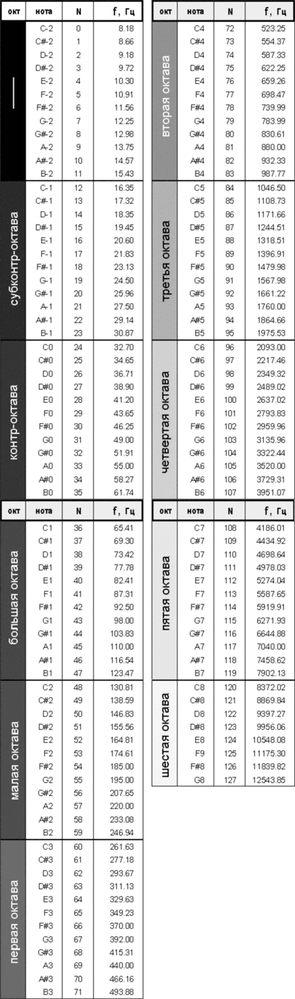
Темперированный строй может быть изменен на любой другой, если тон-генератор отвечает спецификации MIDI Tuning, о чем подробно поговорим в одной из следующих статей.
Для наборов ударных частота ноты и строй не имеют смысла: в зависимости от номера ноты тон-генератор просто запускает сопоставленный с этим номером звук. Как правило, звук ударного инструмента обозначается в секвенсоре осмысленным именем, а не просто MIDI-номером ноты. Имя берется из так называемой карты ударных (Drum Map).
Динамика
Динамику извлечения звука называют по-разному: просто динамика, сила нажатия, скорость нажатия, громкость. Наиболее корректно в случае клавишного инструмента говорить о скорости, поскольку именно скорость нажатия клавиши определяет громкость звучания ноты. Сила нажатия не всегда однозначно соответствует громкости — так, можно довольно сильно давить на клавишу фортепиано, но при этом инструмент будет звучать тихо. Это связано с особенностями механики клавишных.
В спецификации MIDI также используется термин "скорость нажатия", Velocity (от англ. "velocity" — "скорость"). Но для удобства (в ущерб корректности) я буду называть "скорость нажатия" одним словом — "динамика".
Сколько уровней динамики достаточно для точной передачи игры исполнителя? Однозначно ответить сложно. Разработчики MIDI решили кодировать динамику одним байтом данных, и поэтому в MIDI есть 128 уровней Velocity. Замечу, что уровней громкости целой партии (или громкости канала) может быть гораздо больше (см. далее), сейчас речь идет только о количестве уровней динамики отдельно взятой ноты.
Использование значения динамики (за исключением нулевого) спецификацией жестко не определено и зависит от конкретного тон-генератора. Как правило, динамика управляет блоком VCA инструмента — в зависимости от динамики изменяется время или уровень атаки, а, следовательно, и общая громкость звука. Часто динамика управляет параметрами фильтра, делая звук ярче при громкой игре. В семплерах может применяться раскладка по динамике, когда на одну и ту же ноту вешаются несколько семплов, полученных при записи с разными нюансами исполнения. В зависимости от динамики воспроизводится нужный семпл, либо результат микширования двух смежных семплов (для маскирования их разного спектрального состава). Это позволяет довольно успешно имитировать акустические инструменты, звук которых может принципиально отличаться по тембру при разной динамике исполнения.
Возникает вопрос: как должна зависеть громкость сигнала на выходе осциллятора от значения Velocity? Спецификация MIDI рекомендует тон-генераторам использовать логарифмическую зависимость в соответствии с формулой, изображенной на рис. 28.
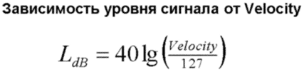
Где LdB — максимальный уровень на выходе осциллятора при заданной огибающей сигнала; обычно точка максимального уровня совпадает с моментом завершения стадии атаки. Зависимость амплитуды сигнала (в процентах) от значения динамики можно найти по формуле на рис. 29.

При максимальной динамике (Velocity = 127) этот уровень равен 0 дБ (100%), при динамике 1 — -84,15 дБ (0,000062%). Значение динамики 0 используется для служебных целей (см. далее) и в формуле неприменимо. Таким образом, MIDI рекомендует использовать для отдельного звука динамический диапазон в 84 дБ. Многие тон-генераторы не следуют этой рекомендации буквально, ведь для большинства звуков такой огромный диапазон просто не нужен. Но все же зависимость, близкая к логарифмической, обычно выдерживается на каком-либо отрезке динамики. MIDI также рекомендует шкалу соответствия музыкальных динамических оттенков и Velocity, показанную на рис. 30.
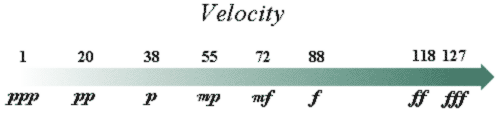
Обращает на себя внимание большой промежуток между forte (f, Velocity = 88) и fortissimo (ff, Velocity = 118). На следующих графиках (рис. 31) показана рекомендуемая логарифмическая зависимость: уровень в децибелах от динамики (левый график) и относительный уровень (в процентах) от динамики (правый график). Для удобства на графиках отмечены музыкальные динамические оттенки.
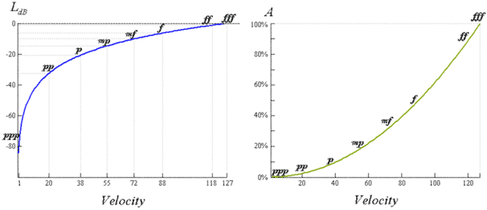
Нажатие клавиши
Сообщение Note On дает команду тон-генератору сыграть ноту заданной высоты с заданной динамикой. Первый байт данных содержит MIDI-номер ноты, второй — динамику взятия. Например, при нажатии До первой октавы (MIDI-номер 60) на первом MIDI-канале с динамикой 110 сообщение будет представлено тремя последовательными байтами (рис. 32).
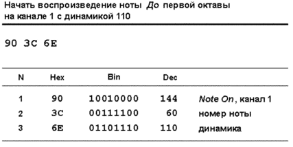
Результат обработки сообщения — немедленное воспроизведение ноты. Однако в пэтчах с длительной атакой может сложиться ощущение задержки после нажатия, что вызвано медленным нарастанием громкости звука. Если в ритмически значимый момент (например, на сильную долю такта) нота должна звучать с уже достаточной громкостью, нужно предусмотреть взятие ноты с опережением.
Значение динамики посылается тон-генератору только в момент взятия ноты, и в зависимости от него формируется громкость звучания на всех стадиях огибающей. Отсюда вывод: пока нота звучит, управлять ее громкостью с помощью параметра Velocity нельзя. А такая потребность возникает довольно часто. Например, в партии подклада или струнного ансамбля, когда один аккорд звучит несколько тактов подряд, а, скажем, во втором такте нужно увеличить громкость. На помощь приходят другие способы, например, послекасание или контроллер экспрессии (см. далее).
|
Нулевая динамика Многие устройства генерируют для снятия ноты нормальное сообщение Note Off, но есть и такие, которые всегда генерируют Note On с нулевой динамикой. |
Нединамические устройства (например, простейшие MIDI-клавиатуры) должны передавать в сообщении Note On постоянное значение динамики, равное 64.
Спецификация требует, чтобы каждое сообщение Note On для определенной ноты на определенном канале было рано или поздно завершено парным сообщением Note Off для той же ноты на том же канале (или сообщением Note On с нулевой динамикой). Бывают случаи, когда нота заканчивает звучание сама по себе, без поступления сообщения Note Off — например, на коротких звуках ударных, или из-за формы огибающей, при которой на участке спада (Decay) амплитуда падает до нуля, без дальнейшей стадии поддержки (Sustain). В таких случаях все равно необходимо сообщение о снятии ноты, хотя, вроде бы, звука уже и нет. Тон-генератор считает, что нота звучит до тех пор, пока не поступило сообщение об ее снятии.
А что произойдет, если во время звучания какой-либо ноты придет сообщение о взятии той же ноты на том же MIDI-канале? Здесь все зависит от инструмента: под новую ноту может быть отведен свободный голос полифонии, и она будет звучать в унисон с уже звучащей, либо ранее взятая нота будет "срезана", а новая зазвучит в одиночестве. Во втором случае говорят о взаимоисключающем поведении одинаковых нот на одном канале (Note Exclusivity on a MIDI channel basis).
Другой вариант взаимоисключающего поведения возникает в том случае, если в тон-генераторе заданы так называемые группы исключения (exclusive key group). Ноты, входящие в такую группу, не могут звучать одновременно. Если приходит сообщение о взятии ноты, тон-генератор проверяет: нет ли на том же MIDI-канале уже звучащей ноты, относящейся к той же группе, и если есть — выключает ее. Группа исключения может быть создана из любого набора нот, одновременное звучание которых нежелательно. Чаще всего такие группы применяются в наборах ударных для достижения большего реализма звучания. Например, группа хета может включать звуки открытого, закрытого и педального хай-хета, то есть звуки, которые в реальной жизни извлечь одновременно нельзя. Другие примеры: открытый/заглушенный треугольник, бубен (удар/отдача), различные варианты guiro, cuica и прочая перкуссия.
Отпускание клавиши
Сообщение Note Off дает команду снять ноту заданной высоты. Первый байт данных содержит MIDI-номер ноты, второй — динамику ее снятия. Снятие ноты заставляет тон-генератор перейти к стадии затухания (Release) огибающей. Таким образом, после снятия пальца с клавиши нота звучит еще ровно столько, сколько длится этот участок. Правда, если отпустить клавишу при нажатой педали сустейна (контроллер CC#64, Hold Pedal, см. далее), то звуковой генератор, хотя и получит сообщение Note Off, но участок Release не включит. Нота продолжит звучание на участке поддержки (Sustain) до тех пор, пока педаль не будет отпущена. При отпускании педали генератор, помня о том, что сообщение Note Off уже приходило, включит участок Release автоматически, и нота скоро прекратит звучание.
|
Note Off в программах ударных Для некоторых звуков (открытые тарелки, свист и др.) управление длительностью весьма желательно, и многие тон-генераторы в этом случае реагируют на Note Off как и положено. |
Реакция устройства на динамику снятия (то есть скорость отрыва пальца от клавиатуры) спецификацией не определена. Чаще всего она не используется ни MIDI-контроллерами, ни синтезаторами. Первые, как правило, посылают динамику снятия 64, вторые ее просто игнорируют. Есть, правда, несколько MIDI-клавиатур из высшего ценового диапазона, которые чувствительны к скорости снятия клавиш. При наличии такой клавиатуры можно, в принципе, заставить синтезатор реагировать на динамику снятия, например, так, чтобы при ее увеличении уменьшалось время затухания (Release).
Теперь уже можно рассмотреть полноценный пример. Итак, мы нажимаем ноту До первой октавы на первом MIDI-канале с динамикой 110, а потом отпускаем ее. Наша клавиатура, нечувствительная к скорости снятия клавиш, выдает на выход MIDI Out последовательность из шести байт (рис. 33).
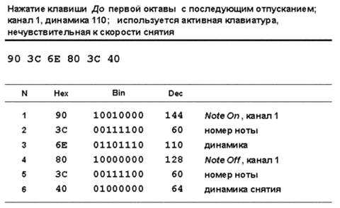
И ждет следующих прикосновений пальцев...
Послекасание
Послекасание (Aftertouch) — это давление, прикладываемое к клавише после ее нажатия. Послекасание позволяет имитировать приемы звукоизвлечения, несвойственные клавишному инструменту, например, вибрато или тремоло, причем довольно естественным и удобным способом — нажав клавишу, можно непрерывно изменять давление на нее.
Это давление измеряют сенсоры клавиатуры. Делать сенсор под каждую клавишу — дорогое удовольствие, поэтому большинство клавиатур имеют один сенсор, который измеряет общее давление. Исходя из этого, спецификация определяет два варианта послекасания: монофоническое (или послекасание канала, Channel Pressure) — это сообщение генерируют клавиатуры с одним-единственным сенсором, и полифоническое (Polyphonic Key Pressure) — для клавиатур с сенсором на каждую клавишу. Бывают клавиатуры, которые не генерируют послекасания вообще.
Понятно, что для изменений в звуке генератор должен понимать сообщения послекасания и как-то на них реагировать. Обычно изменяются уровень поддержки (Sustain) на огибающей громкости или фильтра, или глубина/скорость модуляции, производимой генератором низкой частоты. Спецификация не определяет конкретной реакции устройства на сообщения послекасания, и многие синтезаторы их игнорируют.
Послекасание канала менее информативно и не имеет такой гибкости и выразительности, как полифоническое. Так, если вы дожмете одну клавишу больше другой на устройстве, передающем послекасание канала, оба давления будут усреднены, словно вы дожали обе клавиши с одинаковой силой. Если в аккорде вы хотите выделить басовую ноту, ничего не выйдет — эффект будет применен ко всем нотам, звучащим на канале.
Обычно клавиатура посылает один вид послекасания. Но бывают клавиатуры (с сенсором на каждую клавишу), которые могут посылать оба вида сообщений сразу: полифоническое послекасание формируется как обычно, а послекасание канала вычисляется как среднее от полифонического по каждой клавише.
Послекасание — типичный непрерывный контроллер низкого разрешения, с характерной особенностью: оба типа сообщений довольно сильно загружают канал передачи данных. Давить на клавиши с постоянным усилием получается редко, а при любом изменении давления передается новая порция байт. Послекасание канала загружает канал передачи значительно меньше, чем полифоническое, так как производит меньше байт в единицу времени.
Первый байт данных сообщения полифонического послекасания содержит MIDI-номер ноты, второй — давление на клавишу после нажатия. Пример: если после взятия аккорда Ре-Фа-Ля первой октавы дожать клавиши так, чтобы давление на каждую стало разным (например, 92, 84, 90), то сообщение будет представлено девятью байтами (рис. 34, аккорд взят на втором MIDI-канале).
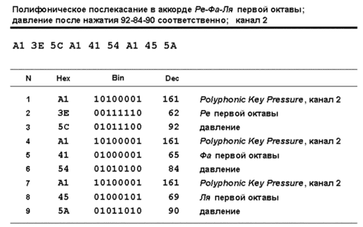
Стоит изменить давление, как тут же будет сгенерирована новая порция байт.
Сообщение послекасания канала состоит из одного байта данных, следующего за статус-байтом. Байт данных содержит давление канала. Сообщение Channel Pressure для аккорда из предыдущего примера (с усредненным давлением, равным 89), показано на рис. 35.
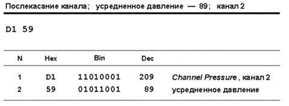
Звуковысотное колесо
Звуковысотное колесо (Pitch Wheel) используется для плавного изменения высоты тона звучащей ноты. Процесс изменения высоты называется питч-бендом (Pitch Bend), а соответствующее MIDI-сообщение — Pitch Wheel Change (его часто и называют Pitch Bend). Сообщение об изменении высоты относится сразу ко всему MIDI-каналу, поэтому нельзя, например, сыграть на одном канале аккорд, а сдвинуть высоту тона только у его басовой ноты. Именно по этой причине полноценная имитация эффекта "подтяжки" струнного инструмента возможна только в режиме канала 4, о чем говорилось ранее.
Pitch Wheel Change — сообщение высокого разрешения, то есть позволяет использовать 16384 значений изменения высоты, и относится к контроллерам непрерывного типа. При движении колеса высота ноты скачкообразно изменяется во времени, но благодаря маленьким шагам (равным 1/16384 диапазона изменения) эти скачки обычно незаметны, и создается ощущение плавного изменения высоты.
Первый байт данных сообщения содержит младшие семь бит 14-битной величины изменения, второй — старшие семь бит. За центральное положение колеса (сдвиг высоты тона отсутствует) принято значение 8192 (16384 / 2, шестнадцатеричное 0x2000). Значения больше 8192 означают повышение высоты тона, меньше — понижение. Пара MSB:LSB для центрального положения колеса имеет вид 64:0 (8192 / 128 = 64 без остатка), в шестнадцатеричном виде — 0x40:0x00.
Каков диапазон изменения высоты тона? Спецификация оставляет этот вопрос на совести производителя тон-генератора. MIDI-клавиатура (или другое средство ввода) всегда передает значения от 0 до 16383 (0x3FFF), получаемые с колеса, а тон-генератор интерпретирует их так, как считает нужным. Так что нет никакой гарантии, что, соединив два синтезатора по MIDI и вращая звуковысотное колесо на одном из них, мы получим на втором синтезаторе ту же самую величину изменения высоты нот. Обычно диапазон составляет +/-2 полутона от центрального значения, но его можно изменять с помощью PRN-параметра Pitch Bend Sensitivity, о чем поговорим далее. Большинство тон-генераторов позволяют устанавливать независимый диапазон для каждого канала, но есть и такие, в которых диапазон задается глобально, на все каналы, или фиксирован на значении +/-2 полутона. Попадаются инструменты, которые вообще не реагируют на сообщение Pitch Wheel Change.
Посмотрим, что посылает MIDI-клавиатура тон-генератору в момент, когда звуковысотное колесо находится на одной трети пути от центра к верхней точке. Очевидно, что положение колеса соответствует 4/6 (или двум третям) от всего диапазона значений: 16384 x 2/3 = 10923. Разобьем это значение на составляющие MSB и LSB: MSB = 10923 / 128 = 85, остаток — 43. Следовательно, пара MSB:LSB будет иметь вид 85:43. (0x55:0x2B). Если сообщение передается на пятом MIDI-канале, то оно будет выглядеть так, как показано на рис. 36.
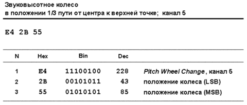
Если нужно повысить или понизить ноту на определенное количество центов, то для расчета значений MSB и LSB, посылаемых в сообщении Pitch Wheel Change, можно использовать формулы, изображенные на рисунке 37.
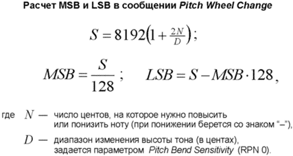
Модуляция
Сообщение Modulation (CC#1/CC#33) задает глубину частотной модуляции (вибрато) и управляет соответствующим LFO-блоком тон-генератора. В синтезаторах управление модуляцией происходит обычно с помощью колеса, либо рычага на передней панели.
В духовом MIDI-контроллере эффект вибрато достигается практически так же, как и в акустическом инструменте. На клавишном инструменте, которому вибрато не свойственно, реалистичный эффект проще получить с помощью послекасания, чем с использованием колеса модуляции — это гарантирует, что модуляция будет присутствовать только тогда, когда звучит нота. С использованием колеса такую гарантию дать нельзя. Если тон-генератор не реагирует на сообщения послекасания, а клавиатура может их производить, то можно настроить клавиатуру так, чтобы она посылала сообщения модуляции вместо сообщений послекасания. Для синтетических звуков реализм обычно не нужен, поэтому колесом модуляции можно пользоваться свободно, не боясь превысить "естественный" уровень эффекта.
Диапазон, в котором изменяется глубина модуляции, спецификация оставляет на усмотрение тон-генератора. MIDI-клавиатура (или другое средство ввода), как и в случае с питч-бендом, всегда передает значения от 0 до 16383 (0x3FFF), получаемые с колеса, а тон-генератор интерпретирует их так, как считает нужным. Единственное, о чем можно сказать совершенно точно — значение 0 отключает модуляцию. Для тонкого управления эффектом настройка диапазона глубины очень желательна — можно производить колесом более смелые движения без боязни выскочить за реалистичный диапазон. Однако способ настройки диапазона в спецификации MIDI не стандартизирован. Некоторые тон-генераторы позволяют это сделать посредством сообщений SysEx или с помощью NRPN. Спецификации Roland GS и General MIDI 2 предлагают дополнительные параметры для управления эффектом вибрато, но об этом — в другой статье.
Теперь пример. Если мы работаем на третьем MIDI-канале и поворачиваем колесо модуляции ровно на половину хода, то будет передано довольно много промежуточных положений колеса, а последними поступят байты, показанные на рис. 38.
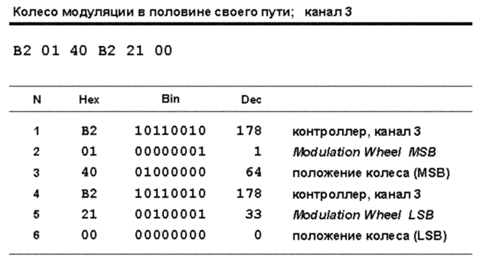
Духовой контроллер
Сообщение Breath Controller (СС#2/CC#34) призвано имитировать нюансы звукоизвлечения на духовых инструментах (например, уровень или время атаки, вибрато, громкость во время звучания ноты), поэтому и применяется чаще всего на соответствующих пэтчах — деревянных или медных духовых. Для акустических звуков духовых это сообщение позволяет добиться большей убедительности звучания, для синтетических духовых — добавляет новые средства "оживления" пэтча. Можно сказать и так: сообщение Breath Controller — это своеобразная версия послекасания с точки зрения духовика. Наиболее убедительная имитация духового инструмента получается в MIDI-режиме 4.
Как нетрудно догадаться, спецификация здесь умывает руки — реакция тон-генератора на сообщение Breath Controller никак не закреплена стандартом. Это сообщение может генерироваться любым доступным органом управления, способным производить сообщения непрерывного типа, а при приеме преобразовываться в Breath Controller (о подобных преобразованиях говорилось ранее). Но более убедительные результаты получаются при использовании специального средства ввода, которое так и называется — духовой контроллер. Некоторые синтезаторы имеют вход под такой контроллер. Естественно, духовым контроллером нужно уметь пользоваться.
Однако даже если синтезатор поддерживает духовой контроллер, многие пэтчи никак на него не реагируют, и чаще всего пользователю предлагается настроить реакцию самостоятельно. Обычно настройки касаются генератора огибающей. Сообщение имеет высокое разрешение и относится к непрерывным контроллерам. На рис. 39 — пример сообщения с духового контроллера на первом MIDI-канале (музыкант извлекает звук таким образом, что прибор генерирует значение 3000).
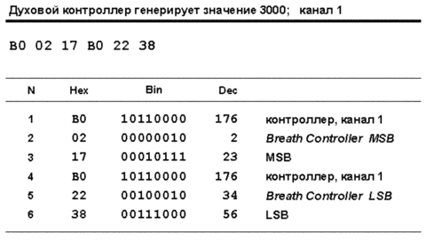
Портаменто
Портаменто — эффект, который состоит в скольжении высоты тона от одной ноты до следующей: нота начинает звучать на высоте предыдущей, а затем постепенно подтягивается к своей нормальной высоте. Акустический аналог портаменто — глиссандо тромбона или струнных (особенно характерно оно для безладового баса). В синтезаторах эффект портаменто (иногда называемый Glide) используется, в основном, для одноголосных мелодий; это один из излюбленных приемов при исполнении сольной партии или баса на старых аналоговых синтезаторах, делающий звук более интересным.
Режим портаменто включается с помощью сообщения переключателя Portamento On/Off (СС#65), обычно назначаемого на педаль. При включенном режиме очередная нота начинает звучать на высоте, определяемой последним сообщением Note On на данном канале, затем высота плавно скользит к нормальной. Основной параметр, влияющий на выразительность эффекта — время портаменто, то есть время, за которое происходит скольжение. Временем портаменто управляет сообщение Portamento Time (СС#5/СС#37 — контроллер высокого разрешения). Стандартное значение для него не определено, как, впрочем, и соответствие значения конкретным единицам времени (секундам, миллисекундам). Значение 0 означает наименьшее время.
Эффект портаменто чем-то напоминает питч-бенд, но главное его отличие от последнего в том, что мы управляем не величиной смещения, а временем, за которое происходит смещение. В быстрых пассажах это время не должно быть слишком большим, иначе отдельных нот будет не разобрать. С другой стороны, чем больше время портаменто, тем отчетливее эффект. Во время медленных пассажей можно изменять время портаменто между каждой парой нот — зачастую только такой способ позволяет добиться нужной выразительности.
Теперь несколько тонких моментов. Эффект портаменто не требует связной игры двух нот (приемом легато), поэтому можно нажать одну клавишу, отпустить и пойти покурить. По возвращении можно нажать другую клавишу и обнаружить, что синтезатор запомнил высоту последней ноты, а новую взял с "подъездом" от старой. Так что пауза между звуками роли не играет. А если отпустить клавишу до прекращения скольжения, то есть снять ноту раньше, чем она подтянется к своей нормальной высоте? Для тон-генератора это не важно — новая нота всегда стартует с нормальной высоты предыдущей.
При игре с наложением голосов, когда во время удержания одной клавиши нажимается другая, затем третья и т. д., все происходит аналогично. Исходная высота для каждой следующей ноты принимается равной нормальной высоте предыдущей. Если синтезатор находится в полифоническом режиме, то все скольжения в этом случае выполняются одновременно и независимо.
Возникает вопрос: а что будет, если играть аккордами? Здесь самое время вспомнить природу MIDI — никакие два сообщения не могут поступить по одному каналу одновременно. Так что аккорд будет состоять из нескольких последовательных сообщений Note On, и в данном случае все аналогично игре с наложением голосов. Только интервалы между сообщениями Note On будут минимальны, да и сказать точно, какая из нот аккорда будет передана первой, заранее нельзя — это уж от исполнителя зависит, ведь строго одновременно все ноты аккорда он не возьмет. Но тогда скольжение каждый раз (и для каждой ноты аккорда) будет случайным — в зависимости от очередности прихода сообщений Note On. Такой беспорядок, конечно, тоже может считаться выразительным эффектом, но хорошо бы как-то сообщить тон-генератору, от какой ноты начинать "подъезд", причем сообщить это для каждой из нот аккорда.
Подобная необходимость может возникнуть и при игре одноголосной мелодии. Например, когда мелодия состоит из узких интервалов, а подъезд к каждой ноте хочется получить большой, жирный, как будто на целую октаву. Одним словом, желательно, чтобы тон-генератор начинал скольжение не от последней взятой ноты, а от установленной исполнителем.
Раньше эта задача могла быть выполнена только с записанным материалом, в секвенсоре, с помощью так называемых "мнимых нот". Это ноты, в которых важна только их высота, а динамика минимальна. Основная задача — сделать так, чтобы тон-генератор считал мнимую ноту последней взятой на канале. Для этого мнимая нота вставлялась в список событий вручную, непосредственно перед реальной нотой, для которой таким образом задавалась высота начала скольжения. Так как громкость скольжения определяется громкостью той ноты, к которой скользит тон, то динамика мнимой ноты может быть вообще нулевая — тогда ее гарантированно не будет слышно.
Мнимые ноты позволяют также обойтись без применения контроллера Portamento Time. Если нужно, чтобы высота ноты изменялась быстрее, то можно использовать мнимую ноту, более близкую по высоте к следующей. Скольжение, правда, начнется с меньшего интервала, но иногда это не так и важно.
В 1992 году в спецификацию было добавлено сообщение Portamento Control (второй уровень кодирования, СС#84), которое призвано заменить мнимые ноты. Это сообщение задает номер ноты, от которой выполняется скольжение. Оно может быть сгенерировано в реальном времени с помощью какого-либо органа управления инструмента, а это значит, что прямо в процессе исполнения можно задавать высоту начала скольжения.
Реакция тон-генераторов на Portamento Control имеет особенности. Так, если номер ноты, поступивший в этом сообщении, равен номеру ноты, которая уже звучит, то для подъезда будет использована текущая огибающая, без перезапуска генератора огибающей для новой ноты. Если инструмент находится в режиме Mono или он принял сообщение о включении педали легато, то звучащая нота должна немедленно сменить высоту на ту, что задана в сообщении Portamento Control, а затем уже скользить к высоте следующей ноты.
Настало время примера. Мы работаем на девятом MIDI-канале и выставляем время портаменто ровно в середину диапазона, затем выбираем стартовую ноту для подъезда, скажем, До первой октавы, и для включения эффекта нажимаем педаль портаменто. Последовательность байт показана на рис. 40.
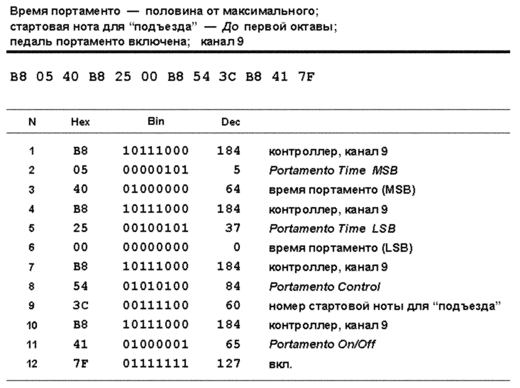
Громкость и экспрессия
Прежде, чем говорить про управление громкостью в MIDI, стоит вспомнить о том, как обстоит дело при работе с "живыми" музыкантами.
Все существующие исполнительские составы можно разделить на два типа: естественно сбалансированные и несбалансированные. К первому типу относятся составы, которые могут звучать без системы звукоусиления (без "подзвучки" микрофонами), в естественных акустических условиях. По большей части это оркестры и камерные ансамбли, исполняющие классическую музыку, иногда джазовые оркестры и небольшие коллективы. Во времена, когда писалась классическая музыка, звукоинженеров не было, и о балансе заботились сообща: архитекторы при строительстве концертных залов, мастера при изготовлении музыкальных инструментов, композиторы, дирижеры и, конечно, сами музыканты.
Управляя оркестром, дирижер создает комфортное, сбалансированное звучание, следуя партитуре композитора. Композитор, в свою очередь, при создании партитуры следит за тем, чтобы ни один из компонентов ансамбля или оркестра не заглушал другой. Так, например, одна скрипка обладает очень тихим звуком по сравнению с тромбоном. Если нужно сбалансировать эти инструменты, композитор поручает одну и ту же партию нескольким скрипкам, то есть группе музыкантов. При этом происходит естественное акустическое звукоусиление более тихих инструментов по сравнению с более громкими.
Большая же часть современной музыки исполняется несбалансированными составами, то есть составами, которые не могут прозвучать в естественной акустике без системы звукоусиления и искусственной регулировки баланса. Надеюсь, не стоит объяснять, что если в рок-группе музыкант играет соло на флейте, то без подзвучки оно безнадежно утонет в мощном звуке остальных инструментов. Балансировку такого состава производит звукоинженер электронным способом, в микшерном пульте, при этом исходная акустическая мощность сигналов значения не имеет. Легким движением фейдера ту же флейту можно сделать в два раза громче всех остальных инструментов, поскольку звук к слушателю приходит от акустических систем концертного зала. И хотя музыканты по ходу исполнения могут изменять динамику звука, решающее слово в балансе остается за звукоинженером. Это тем более относится к чисто электронной музыке, где живые исполнители вовсе отсутствуют.
Так что же с MIDI?
Предположим, стоит задача сымитировать звучание естественно сбалансированного состава. В этом случае, по идее, достаточно одного параметра Velocity: скорость нажатия клавиш определяет текущий динамический оттенок (форте или пиано) партии. Однако при совместном звучании партий в мультитембральном тон-генераторе их относительный баланс чаще всего неудовлетворителен и требует дополнительной регулировки.
Связано это с тем, что при создании пэтчей не учитывается реальная акустическая мощность инструментов. Ранее говорилось о рекомендованном соотношении значения динамики (Velocity) и выходного уровня сигнала. Так вот, для всех пэтчей оно одно и то же. Это значит, что при игре с одной и той же динамикой, например, партии клавесина и трубы, выходной уровень обоих партий будет примерно одинаковым, чего в реальной жизни быть не может (труба намного громче клавесина). В принципе, такого несоответствия можно избежать, уменьшая выходной уровень семплов в настройках акустически тихих программ, но это не выход. Во-первых, при прочих равных условиях ухудшится соотношение сигнал/шум, а во-вторых, при имитации несбалансированного ансамбля такая поправка в уровне будет только мешать.
Итак, параметра Velocity для выстраивания баланса нескольких партий недостаточно. На помощь приходит сообщение MIDI Volume (контроллер СС#7/СС#39), которое задает громкость звучания на MIDI-канале. Его действие можно сравнить с фейдером канала в микшерском пульте. С какой бы динамикой не извлекал звуки исполнитель, уровень партии в миксе будет зависеть от положения фейдера. Говоря языком MIDI — какая бы скорость нажатия не использовалась, выходная громкость партии будет зависеть от значения MIDI Volume.
В современных тон-генераторах тембр при увеличении динамики, как правило, изменяется (становится ярче). Применяя совместно Velocity и MIDI Volume, можно получить любые сочетания "яркость/громкость". Например, максимальное значение Velocity при небольшой громкости канала создает впечатление очень яркого по тембру, но тихого инструмента.
В мультитембральном тон-генераторе после отстройки относительного баланса партий (с помощью сообщения MIDI Volume) может потребоваться регулировка общей громкости устройства (уровня мастер-выхода). Для этого чаще всего используется сообщение SysEx Master Volume (поговорим в следующей статье), иногда — значение громкости одного из каналов или контроллера типа General Purpose.
Большинство устройств игнорируют LSB в сообщении MIDI Volume и позволяют производить только грубую настройку (128 уровней), посредством MSB (контроллер CC#7). Некоторые старые синтезаторы на сообщение MIDI Volume не реагируют.
Бок о бок с сообщением громкости канала идет сообщение экспрессии (Expression, СС#11 / CC#43). Его название может сбить с толку, поскольку прямой перевод с английского (expression — выразительность) — довольно расплывчатое понятие. Многие в этой связи склонны ожидать от контроллера экспрессии какую-либо тонкую настройку пэтча (например, посредством фильтров) или других чудес. На самом деле все гораздо проще.
Слово Expression как музыкальный термин соответствует понятию "нюанс" русской музыкальной терминологии, которое означает, прежде всего, динамический нюанс исполнения — форте, пиано и т. д. Таким образом, контроллер экспрессии предназначен для дополнительного управления громкостью MIDI-канала. Как и в случае с сообщением MIDI Volume, большинство тон-генераторов допускают только грубую настройку экспрессии (128 уровней) посредством MSB (контроллер CC#11).
При максимальном значении экспрессии громкость канала равна текущему значению MIDI Volume. При уменьшении экспрессии начинается уменьшение результирующей громкости. Когда экспрессия равна нулю, громкость канала также равна нулю; когда экспрессии "половина", то и громкость канала равна половине от текущего значения MIDI Volume.
Зачем нужно такое двухуровневое управление громкостью? Для удобства. Довольно часто требуется плавное нарастание или затухание звука (крещендо или диминуэндо) в каком-либо месте партии. Предположим, что для этой цели у нас есть только контроллер MIDI Volume. С помощью него мы создаем кривую нарастания звука, которая имеет довольно затейливую форму. В соло нарастание звучит хорошо. Но в миксе партия теряется. Как быть? "Поднять" всю кривую. Это значит, что каждое событие об изменении громкости канала должно быть пересчитано в сторону увеличения, а это не всегда делается легко и быстро. Кроме того, может просто не хватить запаса по громкости: если некоторые события MIDI Volume на кривой уже имеют большое значение, например, 120, то поднять всю кривую более чем на 7 пунктов не получится. А партия все равно может звучать недостаточно громко...
Гораздо проще управлять динамикой внутри партии с помощью сообщения экспрессии, а с помощью MIDI Volume балансировать партию со всеми остальными. Тогда в нашем случае задача упрощается: нужно только увеличить общую громкость канала, а кривая нарастания останется неизменной.
Исходя из этого, протокол MIDI рекомендует использовать сообщение MIDI Volume только для общей балансировки партий, один раз в самом начале аранжировки, а динамические изменения в процессе звучания производить с помощью сообщения экспрессии.
Еще один пример. Предположим, мы отстроили баланс партий рояля и баса так, что партия рояля имеет громкость 110, а баса — 90. Теперь, если в какой-то момент времени понадобится, скажем, уменьшить громкость обеих партий в два раза, достаточно послать на оба канала сообщение экспрессии со значением 64. После этого громкость рояля станет равна 55, а баса — 45. Можно представлять себе контроллер громкости как фейдер канала в микшере — с помощью него производится статическая балансировка. Экспрессия в данном случае является аналогом группового фейдера, с помощью которого изменяется громкость нескольких дорожек, с сохранением относительного баланса между ними.
Сообщение MIDI Volume обычно производится слайдером громкости на передней панели инструмента, для сообщения экспрессии может использоваться педаль. Однако записывать в секвенсор лучше только сообщения экспрессии, поскольку сообщение MIDI Volume должно появляться на канале один раз в самом начале аранжировки. Если инструмент позволяет, лучше настроить его так, чтобы вместо СС#7 передавалось сообщение экспрессии. А можно использовать возможность переназначения контроллеров в секвенсоре. После записи всех партий сообщения громкости канала вводятся вручную, в процессе отстройки баланса.
Теперь пример. Мы работаем на десятом MIDI-канале и выставляем уровень громкости на 100 (чаще всего это значение используется по умолчанию), а экспрессию на 120. Наш тон-генератор понимает только грубую настройку посредством MSB. Последовательность байт изображена на рис. 41.
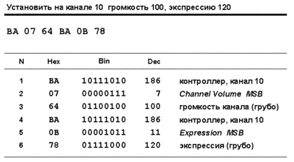
Протокол MIDI рекомендует логарифмическую зависимость уровня сигнала на выходе MIDI-канала от значений громкости и экспрессии. Если тон-генератор на экспрессию не реагирует, она считается максимальной, и формула приобретает вид, показанный на рис. 42_1а для случая, когда используется грубая настройка посредством MSB (CC#7), и на рис. 42_1б, если используется тонкая настройка (MSB:LSB, CC#7/CC#39). Если устройство реагирует на экспрессию, то значения громкости и экспрессии перемножаются: рис. 42_2а при грубой настройке обоих параметров, рис. 42_2б — при тонкой.
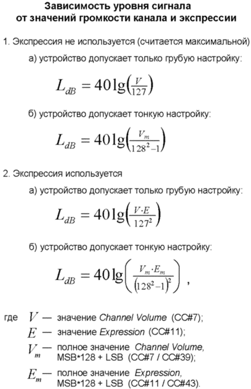
Трехмерный график на рис. 43 наглядно иллюстрирует эту зависимость. Под графиком приводится таблица с несколькими значениями контроллеров и выходным уровнем канала.
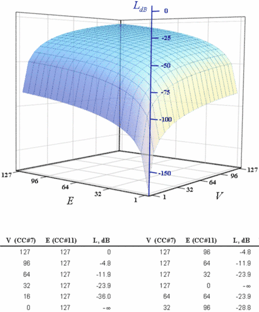
Панорама
Сообщение Pan (контроллеры CC#10/CC#42) устанавливает панораму на MIDI-канале, то есть определяет положение партии в стереобазе. Сообщение имеет смысл только для тех тон-генераторов, которые имеют стереовыход или несколько выходов, работающих как стереопары.
В зависимости от конкретной архитектуры тон-генератора это сообщение может быть регулятором панорамы или баланса. Например, если структура пэтча такова, что в блок VCA инструмента приходит моносигнал, то под воздействием сообщения Pan синтезатор просто делит моносигнал на левый и правый канал в нужной пропорции, и с выхода блока снимается псевдостереосигнал. Но во многих тон-генераторах используются стереосемплы (или задействованы два осциллятора, или несколько слоев с установленным положением слоя в стереобазе на уровне пэтча). Так как в этом случае сигнал приходит на вход VCA уже стереофоническим, то сообщение будет работать как регулятор баланса, то есть задавать относительный уровень левого и правого каналов.
Панорама должна влиять на все ноты канала, включая уже звучащие в момент прихода сообщения (хотя не все тон-генераторы следуют этому требованию). Реакция устройства на изменение панорамы должна быть немедленной. Некоторые устройства не позволяют выполнять динамическое панорамирование — как только на канале появилось сообщение Pan, оно считается фиксированным и все последующие сообщения игнорируются.
Большинство устройств реагируют только на MSB сообщения (контроллер CC#10) и, таким образом, позволяют разбить всю стереобазу на 128 точек. При этом за центральное положение считается значение 64, значения, меньшие 64 (до 0) — панорама влево, большие (до 127) — вправо. Для тех устройств, которые используют тонкую подстройку для панорамы, центральным значением является 8182 (шестнадцатеричное 0x2000). Увеличение значения (до 16383) — панорама вправо, уменьшение (до 0) — влево.
Если мы работаем на первом MIDI-канале и панорамируем партию в положение "полулево", то получится последовательность байт, показанная на рис. 44.
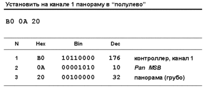
Рекомендованная формула для уровня левого и правого каналов при заданном значении панорамы изображена на рис. 45.
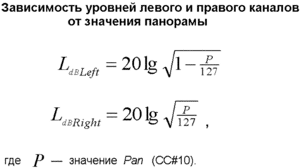
Графики на рис. 46 наглядно демонстрируют эту зависимость: левый — в децибелах, правый — в процентах от максимальной амплитуды.
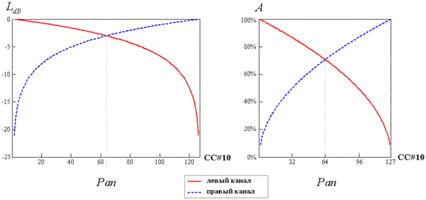
Педали
В спецификации определены сообщения для семи различных типов педалей. При этом только одно из них (Foot Controller) попадает в разряд непрерывных контролеров высокого разрешения. Все остальные являются контроллерами-переключателями.
Сообщение Foot Controller (CC#4/CC#36) может управлять всем, чем угодно. Многие устройства позволяют музыканту настроить любой параметр для изменения посредством этого сообщения. Поскольку физически педаль выполняется на основе потенциометра (то есть может выдавать некоторый диапазон значений), то часто она применяется для тех же эффектов, что и послекасание. Иногда — для изменения строя партии в реальном времени.
Педали-переключатели делятся на две группы: педали, аналогичные педалям рояля (Damper, Sustenuto, Soft), и специальные педали, предназначенные для звукоизвлечения, не характерного для клавишного инструмента (Portamento, Legato, Hold 2). Действие педали портаменто обсуждалось ранее.
Сообщение Damper Pedal (оно же Sustain Pedal, оно же Hold Pedal), СС#64, действует аналогично правой педали фортепиано (когда демпферы поднимаются со всех струн и остаются в таком состоянии до отпускания педали). Ноты, звучащие в момент прихода сообщения, а также все последующие продолжают звучать на участке поддержки (Sustain) до тех пор, пока педаль не будет отпущена. При этом неважно, отпустили вы нажатые клавиши или нет. Если вы отпустили все клавиши, но держите педаль нажатой, ноты могут звучать неограниченно долго. После отпускания педали все ноты на канале разом затухают (переходят в стадию Release). Если при нажатой педали пришло сообщение режима канала All Notes Off, то его выполнение задерживается до отпускания педали.
Сообщение педали сустейна является настоящим пожирателем полифонии. Ведь пока нота не выключена, голос (или несколько голосов), необходимые для ее воспроизведения, заняты и не могут быть отданы под вновь поступившие ноты. Превысить доступную полифонию не составляет труда — достаточно при нажатой педали взять по очереди десяток-другой нот.
Замечу, что это сообщение не позволяет осуществить полноценную имитацию действия правой педали фортепиано, поскольку имеет только два жестких состояния: On и Off. В реальной жизни правую педаль можно нажать не до конца, а чуть-чуть, чтобы демпферы оставались очень близко к струнам и в какой-то мере влияли на их звучание.
Пример последовательности байт при нажатии педали на втором MIDI-канале показан на рис. 47.
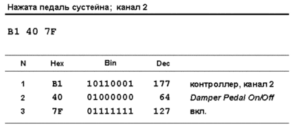
Сообщение Sustenuto (СС#66) действует аналогично средней педали (sostenuto) у рояля (эта педаль еще называется селективной педалью сустейна). При поступлении сообщения выдерживаются только ноты, которые в этот момент уже звучат. Ноты, взятые при нажатой педали, ведут себя обычным образом. Так же, как и в предыдущем случае, если при нажатой педали пришло сообщение режима канала All Notes Off, то его выполнение задерживается до отпускания педали.
Опытные пианисты широко используют эту педаль, поскольку она позволяет придать исполнению тонкую нюансировку и избежать общего педального гула. Например, берется аккорд, затем нажимается педаль состенуто, затем аккорд снимается. Но он продолжает звучать, создавая общую гармонию, на фоне которой последующие ноты звучат с демпферами, а, значит, без гула, образуя интересные сочетания с фоновым аккордом.
Сообщение Soft Pedal (CC#67) действует аналогично левой педали фортепиано — при ее нажатии звук приглушается. У пианино и роялей реализация механизма приглушения разная, но в любом случае звук становится не только тише, но еще и приобретает более мягкую окраску. Обычно тон-генераторы реагируют на это сообщение простым уменьшением громкости, но в некоторых пэтчах (имитирующих звуки рояля) может меняться и окраска.
Сообщение Legato Footswitch (CC#68, появилось в 1992 году) включает эффект легато, то есть связной игры двух последовательных нот. Эффект достигается тем, что у второй ноты пропускается стадия атаки в огибающей. Педаль легато часто используется для имитации фраз духового или струнного инструмента, но также популярна и с синтетическими звуками.
Сообщение Hold 2 (оно же Sustain 2), СС#69, имеет смысл только для тех инструментов, генератор огибающей которых имеет две стадии поддержки. При нажатии педали включается вторая стадия.
Синтез
В каждом синтезаторе применяется своя схема синтеза, своя конструкция компонентов (осцилляторов, фильтров, усилителей и т. д.), свои варианты их использования. Причем в продукции одной и той же фирмы эти варианты часто отличаются. Поэтому спецификация определяет только самые общие, наиболее характерные для большинства тон-генераторов параметры. Например, управление длительностью фаз в генераторе огибающей. Если предложенные сообщения производителя не удовлетворяют, он всегда может использовать SysEx или NRPN.
Сообщение Balance (CC#8/CC#40) изначально предполагалось использовать в тех тон-генераторах, у которых в структуре каждого голоса есть два осциллятора. Такая структура позволяет создавать битембральные звуки (например, один осциллятор производит прямоугольную волну, другой — "пилу" или шум), а также использовать стереосемплы (один осциллятор воспроизводит левый канал, другой правый). Сообщение Balance изменяет относительный уровень первого и второго осциллятора. Среднее значение говорит о том, что сигнал с обоих осцилляторов берется в равной пропорции, значения меньше среднего — преобладает первый осциллятор, больше — второй. Баланс осцилляторов регулируется перед панорамированием канала посредством сообщения Pan. Это позволяет сначала задать исходную стереокартину пэтча, а потом спанорамировать пэтч в миксе. Здесь прослеживается некоторая аналогия с контроллерами экспрессии и громкости.
Однако это сообщение, скорее, рудимент, оно редко используется производителями. В современных тон-генераторах усложнилась структура синтеза, пэтчи стали многослойными, с собственными настройками каждого слоя и прочими тонкостями, которыми проще управлять с помощью SysEx или NRPN. Короче, сообщение Balance не прижилось. Правда, некоторые производители (например, Korg) иногда используют его совместно с инсертными эффектами для управления балансом после обработки. Причем, как правило, в виде грубой настройки (CC#8).
Остальные сообщения, влияющие на синтез, являются непрерывными контроллерами низкого разрешения. Стандартное значение для них — 64.
Сообщение Sound Controller 1 (CC#70, оно же Sound Variation) может влиять на любой блок в структуре синтеза (огибающие, фильтры, цепи модуляции и т. п.). Например, если используется принцип воспроизведения семплов, это сообщение может управлять скоростью проигрывания семпла (что, соответственно, изменяет высоту тона). В FM-синтезаторе оно может задавать глубину частотной модуляции и тому подобное.
Сообщение Sound Controller 2 (CC#71, оно же Timbre/Harmonic Intensity) управляет фильтром (VCF). Как правило, этот параметр задает глубину резонанса.
Сообщение Sound Controller 3 (CC#72, оно же Release Time) управляет временем затухания генератора огибающей (VCA), сообщение Sound Controller 4 (CC#73, оно же Attack Time) — временем атаки.
Сообщение Sound Controller 5 (CC#74, оно же Brightness) управляет частотой среза фильтра.
Работа пяти следующих сообщений (Sound Controller 6, 7, 8, 9, 10) изначально не регламентировалась, кроме того, что это были дополнительные контроллеры для изменения параметров синтеза. Но с появлением спецификации General MIDI 2 их действие четко определено. Поговорим об этом в статье, посвященной совместимости.
Эффекты
Спецификация MIDI создавалась в тот момент, когда встроенные эффекты в синтезаторах были немногочисленны, имели немного параметров настройки, либо вовсе отсутствовали. Поэтому стандартных сообщений для управления эффектами всего семь. Естественно, они не дают той полноты управления, каковую предлагают для встроенных эффектов современные тон-генераторы. Так что многие производители в дополнение к стандартным сообщениям широко используют сообщения SysEx или NRPN.
Первые два сообщения, Effect Control 1 (CC#12/CC#44) и Effect Control 2 (CC#13/CC#45), — непрерывного типа и высокого разрешения. Стандартная реакция на них протоколом не определена, тон-генератор может использовать их для любого параметра, имеющего отношение к встроенному эффекту.
Следующие пять сообщений относятся к контроллерам низкого разрешения. Если байт данных в них равен нулю, то инструмент должен отключить эффект.
Сообщение Effect 1 Depth (CC#91, оно же Reverb Send Level) изначально называлось просто External Effect Depth (глубина внешнего эффекта). Часто применяется для управления количеством реверберации (или уровнем посыла на ревербератор).
Сообщение Effect 2 Depth (CC#92, оно же Tremolo Depth) задает глубину амплитудной модуляции (глубину тремоло).
Сообщение Effect 3 Depth (CC#93, оно же Chorus Send Level, изначально называлось Chorus Depth) задает глубину (уровень) хоруса.
Сообщение Effect 4 Depth (CC#94, оно же Celeste (Detune) Depth) задает глубину расстройки, что актуально для такого инструмента, как челеста.
Сообщение Effect 5 Depth (CC#95, оно же Phaser Depth) задает глубину (уровень) обработки эффектом фейзер.
Контроллеры общего назначения
Четыре сообщения General Purpose Controller (1, 2, 3, 4) из блока непрерывных контроллеров высокого разрешения, как следует из названия, могут управлять любой функцией устройства. Часто эти сообщения генерируются слайдерами, фейдерами и прочими ползунками, поэтому некоторые их называют General Purpose Slider.
Аналогичные им четыре сообщения General Purpose Controller (5, 6, 7, 8) находятся в блоке непрерывных контроллеров низкого разрешения.
RPN
Параметр Pitch Bend Sensitivity (имеет номер 0) задает чувствительность звуковысотного колеса. А если точнее — диапазон изменения высоты тона от центрального значения. В MSB передаются полутона, в LSB — в центы. Например, для настройки диапазона в +/-3 полутона и 8 центов (на первом MIDI-канале) последовательность байт показана на рис. 48. Если центы не важны, посылать LSB не нужно.
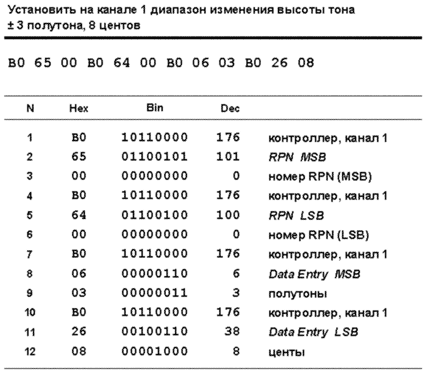
Параметр Channel Fine Tuning (номер 1) раньше назывался просто Fine Tuning. С помощью него можно подстроить высоту тона для звучащей на канале программы в центах. Значение 8192 (0x2000) означает стандартную настройку (то есть нота Ля первой октавы имеет частоту 440 Гц). Значение 0 — строй понижается на 100 центов, 16383 (0x7F7F) — повышается на 100 центов.
Типичный пример. Мы работаем на седьмом MIDI-канале и хотим понизить строй партии на 15 центов. Рассчитаем, какое значение должно быть у RPN номер 1. Стандартной настройке соответствует значение 8192, понижению на 100 центов — 0. Стало быть, для понижения партии на 15 центов нужно 8192 умножить на 15/100. Получится 1228,8. Дробную часть мы передать не можем, поэтому округляем до 1229. Преобразуем это число в MSB и LSB: MSB = 1229 / 128 = 9, LSB = 1229 - (9 x 128) = 77. Последовательность байт показана на рис. 49.
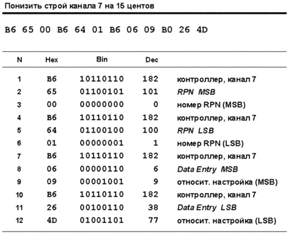
Теперь, если понадобится изменить настройку на 1, можно воспользоваться контроллером Data Increment, а не посылать MSB и LSB заново (рис. 50). Контроллер Data Increment/Decrement работает по отношению к тому RPN, который последний подвергался настройке (если последним был NRPN, то по отношению к нему).
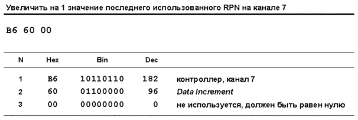
Параметр Channel Coarse Tuning (номер 2) раньше назывался Coarse Tuning. С помощью него строй партии можно менять шагами по 100 центов (т. е. в полутонах). Используется только MSB: значение 64 (0x40) означает стандартную настройку, значение 0 — строй понижается на 6400 центов (64 полутона), 127 (0x7F) — повышается на 6300 центов (63 полутона).
Параметры с номерами 3 и 4 (Tuning Program Change и Tuning Bank Select соответственно) используются в устройствах, которые отвечают спецификации MIDI Tuning (рассмотрим ее в отдельной статье). Так же, как и тембры, строи организуются в программы и банки. RPN 3 и 4 работают по аналогии с сообщениями Program Change и Bank Select, то есть позволяют выбрать для канала конкретный строй.
Наконец, предусмотрен служебный параметр RPN Reset (номер 16383). Представьте такую ситуацию: вы выбрали RPN номер 1 для тонкой подстройки партии. После чего установили какое-либо значение в центах (путем использования контроллеров Data Entry или Data Increment/Decrement) и спокойно продолжаете работать. Тон-генератор все это время считает текущим RPN номер 1, и будет так считать до тех пор, пока явно не задать новый RPN контроллерами RPN MSB и RPN LSB.
Если в то время, пока активен RPN номер 1, случайно будет изменен контроллер Data Entry или Data Increment/Decrement, то у вас собьется настройка партии! Для страховки от подобных случайностей и придуман параметр RPN Reset. После его применения контролеры Data Entry и Data Increment/Decrement как бы отключаются от последнего активного RPN. Обычно рекомендуется всегда посылать RPN Reset после завершения настройки какого-либо RPN. На всякий случай.
Пример использования RPN Reset на первом MIDI-канале при понижении стандартной настройки на полутон показан на рис. 51.
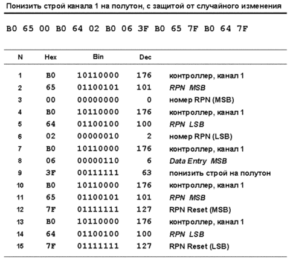
Ну что ж, все сообщения канала мы рассмотрели. В следующей статье поговорим о системных сообщениях, работе приемных и передающих устройств и методах оптимизации при передаче сообщений.